1. Introduction
Scientific discovery depends on connecting ideas across published work. As the volume of published work grows, no single researcher can read every adjacent subfield closely enough to spot links that span domains. A new generation of LLM-based systems, including agentic discovery pipelines, retrieval-augmented synthesis tools, and multi-agent scientific assistants, has begun to address this volume problem. Most of these systems, however, prioritise automation (the agent does the work for you) over observability (you can verify what the agent did and on what evidence). For domains where reproducibility, citation discipline, and post-hoc verification matter, including clinical translation, regulatory review, and graduate-level research training, automation-first systems leave a gap.
LIBRAIN is a research and engineering project that explores this gap. The system is a working multi-agent retrieval-augmented architecture, written in .NET 10 and openly released at github.com/erennmutlu1/librain. It ingests open-access scientific papers from arXiv, organizes them into a semantic vector index, synthesises citation-grounded hypotheses through a Reader, Synthesis, and Evaluator pipeline, and adds a parallel Discovery Mode that explicitly invites extrapolation beyond cited evidence while fencing the speculative portion of each hypothesis into a separate, labelled novelClaim field. Every stage emits structured events keyed by a correlation identifier, so any final output is traceable back to the exact retrieval set, prompts, and per-axis judgments that produced it. The architecture treats this auditability as a first-class design constraint.
This paper investigates whether that integration of RAG retrieval, multi-agent decomposition, a citation-validation contract, an explicit speculation fence, and a structured audit log produces outputs that differ measurably from systems that ablate one or more of these components. We pose four research questions.
RQ1, Traceability. Does a multi-agent RAG architecture with an explicit citation-validation contract and audit-logged correlation IDs produce more traceable hypotheses than (a) a single LLM with topic-only prompting, or (b) Naive-RAG (retrieval with an LLM, without agent decomposition or validation)?
RQ2, Human alignment of automated evaluation. Do the four-axis evaluator scores (novelty, plausibility, structural coherence, quality) correlate with independent human raters’ assessments of the same hypotheses?
RQ3, Robustness under fabrication-prone conditions. Under what conditions does the citation-validation contract produce measurable reductions in fabrication rate, and where does its value reduce to a by-construction guarantee that imposes no quality cost?
RQ4, Claim-level validation. Does a claim-level validation contract over novelClaim content reduce factually-wrong claims inside speculative content without sacrificing the novelty advantage that speculation-fencing produces?
To answer these, we conducted a controlled comparison. The same ten cross-domain topic pairs were run through three configurations: a Single-LLM configuration (no retrieval, no agents), a Naive-RAG configuration (retrieval with a single Claude call using structured output but no validation), and LIBRAIN itself. The thirty outputs were scored on the same four-axis rubric. A separate human evaluation, in which a rater blinded to system identity scored fifteen of these outputs on novelty, plausibility, and hallucination presence, provided the alignment data for RQ2. Spearman rho measured human-versus-LLM correlation. The Discovery Mode pipeline was exercised across a thirteen-paper corpus deliberately spanning artificial intelligence, drug discovery, climate forecasting, and computational neuroscience, ensuring that the cross-domain claim is tested at corpus scale rather than on a single domain.
1.1 Problem Formulation
We frame scientific discovery assistance as a constrained generation problem. A discovery-assistance system S takes a scientific corpus C and a topic specification T = (t1, t2), where t1 and t2 may belong to distinct domains, and produces a tuple O = (h, E_grounded, c_novel, A) where: h is a natural-language hypothesis; E_grounded is a subset of C, a set of evidence chunks supporting h, each individually verifiable against C; c_novel is the speculative portion of h, explicitly fenced and exempt from grounding; and A is a structured audit trace such that every element of (h, E_grounded, c_novel) is reproducible from A.
In LIBRAIN these symbols map directly onto concrete output artifacts: E_grounded is the supportingEvidence array, c_novel is the novelClaim field, and A is the audit trace of structured logs keyed by correlation ID, exported to Application Insights when a connection string is configured. The worked example in Section 3.8 (pair-02, RAG by de novo molecular design) instantiates the tuple: six supportingEvidence chunks, a single fenced novelClaim, and a correlation ID (9dc74671-678d-439f-9438-35ccd2739391) from which the retrieval set, prompts, and per-axis scores are all recoverable.
Constraints. S must satisfy four constraints. (C1) Grounding: every claim in (h minus c_novel) maps to at least one chunk in E_grounded. (C2) Validation: E_grounded is a subset of retrieved(C, T), enforced structurally, no cited chunk may exist outside the set actually retrieved for T. (C3) Speculation containment: claims in c_novel are syntactically separable from grounded claims, so a reader (or an automated evaluator) can isolate the speculative content without inference. (C4) Auditability: A suffices to reconstruct the retrieval set, the prompts, the per-stage decisions, and the per-axis evaluator scores.
Cross-domain bridging demands grounded extrapolation. When t1 and t2 sit in different domains, no single retrieved chunk spans the bridge; a useful hypothesis must extrapolate beyond any one chunk while remaining anchored in evidence. In pair-02 the novel claim (a RAG retriever that self-evolves over design cycles) is justified by an analogy basis grounded in 03-pharmagents:7, not asserted free of evidence. Extrapolation is therefore not a relaxation of grounding but a controlled operation layered on top of it.
Citation fabrication is a model-independent failure mode. Large language models invent plausible-looking citations regardless of scale or instruction tuning. A structural contract (refusing to emit any chunk that is not present in retrieved(C, T)) is the only mitigation that holds independently of model strength, because it removes the failure by construction rather than by hoping the model behaves. This is the difference between a probabilistic reduction and a guarantee.
Novelty and plausibility are a genuine trade-off. Across our ten-pair aggregate, fencing speculation raises LIBRAIN’s novelty 31 percent over Naive-RAG (0.4033 versus 0.3068) while lowering plausibility 19 percent (0.5050 versus 0.6220). This is a deliberate profile shift, not a deficit. Collapsing the two axes into a single quality score would hide both the trade-off itself and the design intent behind it, which is precisely why the evaluation reports them separately.
Observability is a first-class constraint, distinct from output quality. Two systems can emit byte-identical outputs yet differ in trustworthiness: one exposes its retrieval set, prompts, and per-stage decisions for inspection, the other does not. Auditability (C4) is therefore orthogonal to the quality of h and must be evaluated on its own terms. The four research questions defined above each probe one constraint: RQ1 to C4 (auditability), RQ2 to measurement validity, RQ3 to C2 (validation), RQ4 to C3 (speculation containment).
The contributions of this work are as follows.
- An auditable, observable multi-agent RAG architecture for scientific discovery. LIBRAIN integrates retrieval-augmented generation, multi-agent decomposition (Reader, Synthesis, Evaluator, Discovery, Discovery Evaluator), a citation-validation contract that drops fabricated references before evaluation, and a novelClaim field that fences speculative claims from grounded synthesis. The system is openly released as a working .NET 10 implementation in which the agents are plain C# classes wired through ASP.NET Core dependency injection, with Anthropic.SDK 5.10 (a community .NET client) for Claude, OpenAI embeddings, Qdrant, and optional export of the logs to Application Insights, demonstrating that production-grade LLM agent design does not require the Python-centric ML monoculture.
- A three-system, four-axis baseline comparison. A controlled experiment evaluates LIBRAIN against a Single-LLM baseline and a Naive-RAG baseline on the same ten cross-domain topic pairs using the same four-axis rubric (novelty, plausibility, structural coherence, quality). The comparison isolates the contribution of pipeline architecture from the contribution of retrieval and the contribution of the underlying model. Retrieval alone (Naive-RAG) drives the largest improvement in plausibility and overall quality, while LIBRAIN’s distinctive contribution is in novelty under explicit speculation-fencing: approximately 31 percent higher mean novelty score than Naive-RAG at comparable plausibility levels.
- A scope-aware finding on citation-validation contracts. On Sonnet 4.6, across forty-four claimed citations in the Naive-RAG baseline, zero were fabricated, so on that strong model the contract provides a by-construction guarantee (zero fabricated citations) rather than a measured improvement difference. On a second model family (OpenAI gpt-4o-mini and gpt-4o), under the same fabrication-delta harness, the unconstrained Naive-RAG baseline produced 65 to 67 fabricated citations (14 on the clean corpus and 51 to 53 on a starved top-k of 1 corpus) while LIBRAIN produced 0, because the contract dropped all of them. The contract’s value therefore holds as a guarantee on strong models and as a measured reduction on weaker ones, and it scales further to adversarial prompts and larger corpora where fabrication rates are non-trivial. The structural guarantee is the appropriate target for the contract, and our experiment validates that it imposes no quality cost relative to the unconstrained baseline.
- A human-versus-LLM alignment pilot on the four-axis rubric, with a completed three-rater follow-up. A single-author pilot evaluation (blinded labels, Latin-square ordering, n equals 15) scored fifteen outputs (five topic pairs by three systems) on novelty (1 to 5), plausibility (1 to 5), and hallucination (binary). The rater is also the system’s author, which limits the strength of the alignment claim and is acknowledged as the central methodological constraint of the pilot. We report Spearman rho between rater scores and the LLM-as-Judge scores on each axis, providing a first directional alignment check of the four-axis rubric introduced here. A three-rater follow-up reporting inter-rater agreement on the AFTER-FIX pilot outputs is presented in Section 7.9 and Tables 11 and 12.
The rater 1 scoring CSV (experiments/hallucination-pilot/ratings-template.csv, committed before the three-rater replication began and named for the historical role that file played as the empty template) records rater 1’s scores prior to any comparison with another system. A free-text rationale document committed at experiments/human-eval-pilot/rater1-rationale.md was prepared after the scoring CSV was locked; that rationale document references a second-perspective comparison with another large language model used as a sanity check on the rater’s interpretation of the rubric. The CSV scores are pre-comparison and independent; the rationale document is post-hoc reflection.
The rest of the paper is structured as follows. Section 2 positions LIBRAIN against retrieval-augmented generation, agentic AI for scientific discovery, hypothesis generation literature, and the observability tradition in software engineering. Section 3 describes the methodology, including the three reasoning agents, the cross-cutting audit layer, the Discovery Agent and Discovery Evaluator, and the four-axis evaluation rubric. Section 4 discusses engineering decisions and challenges, including the Cosmos to Qdrant pivot and the empirically retired noveltyTarget knob. Section 5 documents the datasets and tools. Section 6 describes the experiments, including the original Phase 2 and Phase 2.5 validation experiments, the extended-corpus cross-domain demonstrations, the three-system baseline comparison, the human evaluation protocol, and a set of Discovery runs in new fields (Experiment 8). Section 7 reports results and discussion organized around the four research questions. Section 8 documents the implementation timeline and project phases, including the later hardening and web interface. Section 9 discusses practical deployment, with subsections on deployment scenarios (9.1), operational considerations (9.2), and the limitations of practical deployment (9.3). Section 10 is the conclusion and Section 11 contains the references.
Rather than positioning LIBRAIN as a faster or smarter automation system, this paper argues that the system’s distinct contribution is observability depth on an architecturally analogous agentic foundation. The empirical work tests that claim: when validation contracts, a novelClaim fence, and audit logs are added to a multi-agent RAG pipeline, what changes, and what does it cost?
2. Related Work
This section positions LIBRAIN against the most directly comparable work along four axes: retrieval-augmented generation as a building block, multi-agent systems for scientific discovery, hypothesis generation and its evaluation, and observability and trust in LLM-based research tools. For each axis, the discussion identifies what existing work establishes and where LIBRAIN’s contribution differs.
2.1 Retrieval-Augmented Generation (RAG)
Lewis et al. (2020) introduced Retrieval-Augmented Generation as a hybrid of parametric and non-parametric memory. A seq2seq generator marginalises over a dense vector index of documents retrieved at inference time. The architecture reduced factual hallucination on open-domain QA benchmarks by anchoring generation in retrievable evidence rather than relying solely on model weights. Subsequent surveys (for example, the long-form RAG survey at arXiv:2505.04651) catalogue extensions: hybrid sparse-dense retrieval, query reformulation, multi-hop chaining, and retrieval-aware fine-tuning.
What standard RAG provides is a single-turn grounded generation: a query, a top-K retrieval, and one generative pass that cites the retrieved chunks. What it does not provide is (a) an explicit separation between claims that are grounded in retrieved evidence and claims that extrapolate beyond it, (b) decomposition of synthesis and evaluation as distinct agent concerns with independent prompts and validation contracts, or (c) an audit layer that traces every claim back to the chunks that produced it.
LIBRAIN uses RAG as a building block, specifically the retrieval step that feeds chunks to its agents, but builds three additional layers on top. A Discovery Agent prompt explicitly invites extrapolation beyond the cited evidence. A structured novelClaim field fences the speculative portion of each hypothesis. A citation-validation contract drops fabricated chunk references before they reach downstream evaluation. Section 7.6 reports a head-to-head comparison against a Naive-RAG baseline (Section 6.6) that ablates exactly these three additions. The comparison isolates LIBRAIN’s contribution from RAG’s contribution.
2.2 Multi-Agent Systems for Scientific Discovery
A recent wave of work decomposes scientific tasks across multiple LLM-driven agents. ChemCrow (Bran et al., 2023, arXiv:2304.05376) augments a single LLM with eighteen chemistry-specific tools, including reaction prediction, retrosynthesis, IUPAC naming, and scaffold hopping, and orchestrates tool selection through a ReAct-style loop. The contribution is tool routing: an agent that knows when to call which external function. PharmAgents (Gao et al., 2025, arXiv:2503.22164) extends this idea to a full drug-discovery pipeline, simulating role-specialised agents (target identifier, lead designer, ADMET evaluator, clinical-trial reasoner) that collaborate on candidate progression. The contribution is pipeline coverage: a multi-agent ecosystem that traverses an entire workflow from target identification to preclinical evaluation.
Comprehensive surveys position this wave within a broader taxonomy. "From AI for Science to Agentic Science" (arXiv:2508.14111) stratifies AI-for-science systems into three levels: AI as computational oracle (expert tools), AI as research assistant (interactive support), and AI as autonomous agent (independent reasoning and decision-making). Gridach et al. (arXiv:2503.08979) catalogue progress on agentic AI for scientific discovery and identify open challenges in evaluation. Liu et al. (arXiv:2503.02104) survey foundation models in biomedicine including drug discovery, clinical informatics, and medical imaging.
These systems share a common goal, namely automation. The agent, alone or in coordination with peers, performs the scientific task end-to-end, and the user receives the result. The model of trust is implicit: the system’s outputs are accepted because the system is competent. What this body of work does not address is the question of observability. Given an output, how does a reviewer (a researcher, a clinician, a regulator, a reproducibility auditor) verify what evidence the system used, what claims are grounded in retrieved sources versus generated by the model, and how the per-stage reasoning proceeded? The agent-decides-for-you model assumes that the audit trail is either implicit (in the agent’s reasoning chain) or not needed.
LIBRAIN takes the opposite stance. Every stage emits structured events keyed by a correlation identifier. Every claim in a hypothesis is either (a) grounded in a retrieved chunk that can be re-fetched by ID, (b) flagged as novelClaim and fenced into a separate field, or (c) dropped before it reaches the evaluator (in the case of a fabricated citation). The result is a traceable discovery pipeline, not a faster automation one. The contribution is orthogonal to ChemCrow’s and PharmAgents’: those systems pursue automation breadth, LIBRAIN pursues observability depth on an architecturally analogous foundation.
2.3 Hypothesis Generation and Its Evaluation
A literature-review-grounded hypothesis generation system poses two distinct questions: how is a hypothesis produced, and how is its quality measured? On the production side, the surveys above (2505.04651, 2508.14111) describe LLM-based systems that prompt models to propose research questions or testable hypotheses from a corpus or knowledge graph. On the evaluation side, most existing work uses either automated metrics on LLM-as-a-Judge scores, or human expert ratings on a small sample, but rarely both with a correlation analysis between them.
LIBRAIN’s four-axis rubric (deterministic novelty as cosine distance to nearest corpus chunk, LLM-judged plausibility, LLM-judged structural coherence, and a C#-aggregated quality score) is positioned to be measurable by both LLM-as-a-Judge and human raters on the same outputs. The Section 6.7 human evaluation protocol (RQ2) runs both: a rater blinded to system identity scores fifteen outputs across three system configurations on novelty, plausibility, and hallucination presence, and the analysis reports human-versus-LLM Spearman rho. This dual-measurement design addresses a gap that the surveys explicitly call out: without alignment between automated and human evaluation, automated scores are unverifiable proxies. LIBRAIN treats this alignment as a measurable quantity, not an assumption. A three-rater follow-up reporting inter-rater agreement on the same rubric is presented in Section 7.9 and Tables 11 and 12.
A second evaluation-side gap concerns the novelty-plausibility trade-off. Hypothesis generation systems must balance speculative reach (novelty) against defensibility (plausibility), and naive scoring conflates these. LIBRAIN’s deliberate separation (deterministic novelty derived from embedding geometry, LLM-judged plausibility derived from inferential coherence with cited evidence) lets the trade-off be reported per output rather than collapsed into a single score. The cross-run consistency study reported in Section 7.4 classifies plausibility as a genuine signal axis (between-pair standard deviation of 0.143 and 0.115, well above the 0.05 anchor floor) and structural coherence as a well-formedness baseline (within-pair standard deviation of 0.020 and 0.038). Novelty is stable across paraphrases by construction. The baseline comparison (Section 6.6, Section 7.6) extends this analysis to LIBRAIN versus Naive-RAG versus Single-LLM on the same four-axis rubric.
2.4 Auditability and Trust in LLM Systems
Production LLM applications treat the model as a black box: input goes in, output comes out, and the path between is opaque. The observability literature in distributed systems and software engineering has long argued that black-box behavior is acceptable only when failures are externally verifiable through structured telemetry: correlation IDs, per-stage timing, and per-stage state. Applying this principle to LLM systems is straightforward in principle but rare in practice. Most LLM agent implementations log final outputs and sometimes intermediate reasoning, but do not provide the structured per-stage trace that lets a reviewer reconstruct why a specific output appeared.
LIBRAIN’s audit layer is built on Microsoft.Extensions.Logging scopes and, when configured, Application Insights. Every stage (retrieval, synthesis, citation validation, novelty scoring, plausibility judging) emits a structured event keyed by the same correlation identifier. The events record per-stage chunk counts, token usage, citation-validation outcomes (with which chunk IDs were dropped and why), and the per-axis scores. Given any output, a reviewer can filter the structured logs by its correlation ID (in Application Insights, when export is configured) and reconstruct the exact retrieval set, the exact prompts, the exact tokens consumed, and the exact path from query to hypothesis. The Cosmos to Qdrant pivot reported in Section 4.4 is itself documented through audit-log evidence: the local-versus-cloud parity check is reproducible from telemetry.
This is the process, architecture, and reasoning framing made operational: agent decomposition handles architecture, the per-stage audit trace handles process, and the reasoning chain is recoverable end-to-end. Existing agentic-science systems do not generally provide this. The contribution lies not in novel logging itself but in the contract that every reasoning step is logged in a way that supports reproducibility and post-hoc verification, treating observability as a first-class design constraint, not an afterthought.
2.5 Positioning LIBRAIN
The following table summarises the architectural features along which LIBRAIN can be compared to representative prior work. The features are deliberately chosen to be objective and architecturally observable (present or absent in the system’s design), not subjective quality claims.
| System | RAG retrieval | Multi-agent | Citation contract | novelClaim fence | Audit log | Cross-domain |
|---|---|---|---|---|---|---|
| Lewis et al. (RAG, 2020) | ✓ | — | — | — | — | — |
| ChemCrow (2023) | — | ✓ (tools) | — | — | — | — |
| PharmAgents (2025) | partial | ✓ (pipeline) | — | — | — | — |
| Agentic-Science surveys | varies | ✓ | rare | — | — | varies |
| Naive-RAG baseline (this work) | ✓ | — | — | — | — | ✓ |
| Single-LLM baseline (this work) | — | — | — | — | — | ✓ |
| LIBRAIN | ✓ | ✓ | ✓ | ✓ | ✓ | ✓ |
Table 1. Architectural feature comparison across representative prior work and the two baselines used in this paper. Cells describe design features (present or absent), not quality claims.
The binary matrix above summarizes architectural presence/absence. To address the related concern that approaches should be described not only by what they contain but by how they implement each characteristic, we expand this view into a characteristic-implementation comparison below. Seven characteristics are defined; each is then described in terms of how representative systems realize it. Two additional comparators are introduced here, PaperQA [26] and SciRAG [27], because they are the most direct neighbors of LIBRAIN on the grounded-RAG and citation-aware-RAG axes respectively.
CH1. Retrieval grounding mechanism. Lewis et al. (2020) use single-pass top-k dense retrieval marginalized over latent documents. ChemCrow grounds in external tool and API calls rather than corpus retrieval. PharmAgents has no document retriever; grounding comes from a closed-loop docking simulator and an experience database. PaperQA performs iterative retrieve-then-read over a scientific paper corpus. SciRAG performs RAG over a scientific corpus. Naive-RAG (this work) does single-pass top-k retrieval, concatenated into one LLM prompt. Single-LLM (this work) has no retrieval. LIBRAIN performs top-k dense retrieval per topic, deduplicated, then dispatched to a multi-agent pipeline.
CH2. Citation validation contract. Lewis et al., ChemCrow, PharmAgents, Naive-RAG, and Single-LLM have no enforced citation-validation contract. PaperQA shows provenance for answers but does not enforce a structural resolution contract. SciRAG performs citation-aware generation over a citation graph without an enforced structural resolution contract. LIBRAIN enforces a structural contract: supportingEvidence chunks must resolve to the retrieval set in C#, while novelClaim is exempt by design. This is the architectural locus of the by-construction fabrication guarantee.
CH3. Speculation handling. All comparators except LIBRAIN treat speculation implicitly: speculative and grounded content blend in the same text. LIBRAIN explicitly fences speculation into a dedicated novelClaim field that the ClaimValidator scores per-sentence for factual hallucination probability. This is the locus of separability between defensible and extrapolative content.
CH4. Agent decomposition. Lewis et al. use a single generative model. ChemCrow employs a single planner agent orchestrating multiple external tools. PharmAgents implements a multi-agent design loop (generation, evaluation, optimization roles). PaperQA runs an agentic retrieve-read-cite loop driven by a single reasoning agent. SciRAG implements a multi-stage RAG pipeline. Naive-RAG and Single-LLM (this work) use a single LLM. LIBRAIN runs three reasoning agents (Reader, Synthesis/Discovery, Evaluator) plus a ClaimValidator, with parallel scoring via Task.WhenAll.
CH5. Audit and observability depth. To our reading, Lewis et al., ChemCrow, PharmAgents, PaperQA, and SciRAG do not report a correlation-ID-keyed per-stage audit trace. Naive-RAG and Single-LLM in this paper inherit the same audit log as LIBRAIN. LIBRAIN writes structured log events keyed by correlation ID at every stage, exported to Application Insights when configured, with per-stage cacheRead and cacheCreate fields plus input and output token counts, making every output traceable end to end.
CH6. Cross-domain support. Lewis et al. is domain-general (open-domain QA). ChemCrow is chemistry-only. PharmAgents is drug-discovery-only. PaperQA spans scientific literature across multiple fields. SciRAG operates over a scientific corpus. Naive-RAG is corpus-bounded; cross-domain only insofar as the corpus spans fields. Single-LLM uses only model knowledge with no corpus boundary. LIBRAIN is cross-domain by construction: Discovery Mode pairs two arbitrary topics across the corpus, demonstrated on ten pre-registered pairs in Section 6.5.
CH7. Evaluation rubric. Lewis et al. use task metrics (exact match, F1). ChemCrow uses task and tool-success metrics with expert spot-check. PharmAgents uses docking scores and wet-lab-style validation. PaperQA reports QA accuracy on benchmark sets. SciRAG reports factual-accuracy and synthesis-quality metrics on QA benchmarks such as QASA and ScholarQA. Naive-RAG and Single-LLM in this paper are scored by the same fixed four-axis Haiku evaluator as LIBRAIN (novelty, plausibility, coherence, quality). LIBRAIN adds claim-level per-sentence factuality scoring on top of the four-axis rubric.
Widely implemented characteristics. Retrieval grounding (CH1) and agent decomposition (CH4) are near table-stakes for systems targeting scientific work. LIBRAIN’s choices here are conventional by design (top-k dense retrieval, three reasoning agents) and the contribution does not sit in these columns.
Rare characteristics. A structural citation-validation contract (CH2), an explicit speculation fence (CH3), and correlation-ID-keyed audit and observability (CH5) are each rare across the comparator set. Most systems treat citation correctness as an emergent property of tool-use rather than an enforced contract; most blend speculative and grounded text in one undifferentiated answer; and none of the external systems, to our reading, report a per-stage audit log that makes an individual hypothesis traceable end to end.
Where LIBRAIN’s contribution lies. The contribution is the combination of CH2 plus CH3 plus CH5: a structural citation contract that exempts a named speculative field (novelClaim), so that speculation is fenced rather than suppressed (CH3), while the same speculative content is independently scored for factuality by the ClaimValidator and the whole pipeline is replayable from a correlation-ID audit trail (CH5). The pair-02 worked example in Section 3.8 illustrates the joint effect concretely: six direct-support chunks all resolve to the retrieval set under the CH2 contract, the single self-evolving-retriever claim is fenced into novelClaim under CH3, and the ClaimValidator returns that claim as GROUNDED with a 0.08 factual-hallucination probability, a verdict that is itself auditable through CH5.
The summary is that LIBRAIN integrates these elements into a single architecture where they reinforce each other, with the novelClaim contract serving as the distinct architectural primitive that we did not encounter combined with citation-grounded retrieval in the systems reviewed in Section 2. The novelClaim field, the citation-validation guarantee that exempts it, and the per-sentence claim-validation contract in Phase 3.A.5 are the specific contribution this paper claims as new. The remaining elements (retrieval grounding, agent decomposition, evaluator scoring, audit logging) are inherited from prior work and recombined. Retrieval grounds synthesis. Multi-agent decomposition separates synthesis concerns from evaluation concerns. The citation-validation contract enforces a by-construction guarantee on the synthesis side. The novelClaim fence separates speculative content from grounded synthesis on the discovery side. The audit log makes every claim traceable back to the chunks and prompts that produced it. The contribution is the integration, and the empirical question this paper investigates is whether that integration produces outputs that differ measurably, on traceability (RQ1), on human-versus-LLM evaluation alignment (RQ2), on fabrication-rate robustness (RQ3), and on claim-level validation of speculative content (RQ4), from systems that ablate one or more of these components.
The Section 6 baseline experiments and human evaluation answer those questions directly. The Section 7 discussion contextualises the answers in the framing developed here. LIBRAIN pursues observability depth on an architecturally analogous agentic foundation; automation breadth is not the goal.
3. Methodology
The implemented version of LIBRAIN decomposes scientific reasoning into four modular agents over a cross-cutting audit layer. Each agent owns one stage of the discovery pipeline; the underlying retrieval substrate is a standard RAG architecture. The system is designed so that the steps of retrieval, synthesis, and evaluation can each be observed and audited at the per-stage level.
An earlier conceptual version of LIBRAIN proposed four agents (Reader, Hypothesis, Evaluator, Archivist). During implementation, two refinements were made. First, the Hypothesis Agent was renamed the Synthesis Agent, because its actual function is not free-form ideation but the synthesis of a citation-grounded answer from the retrieved evidence. Second, the Archivist Agent was reabsorbed into the runtime as a cross-cutting concern based on Application Insights and a correlation-identifier propagation pattern, not a standalone reasoning agent. These refinements reduce conceptual overlap and produce a leaner, more honest architecture. A fourth reasoning agent, the ClaimValidator (Section 3.7), was added later in Phase 3.A.5 to score per-sentence factuality over novelClaim content; it is documented as a distinct addition, not as part of the original three-agent core.
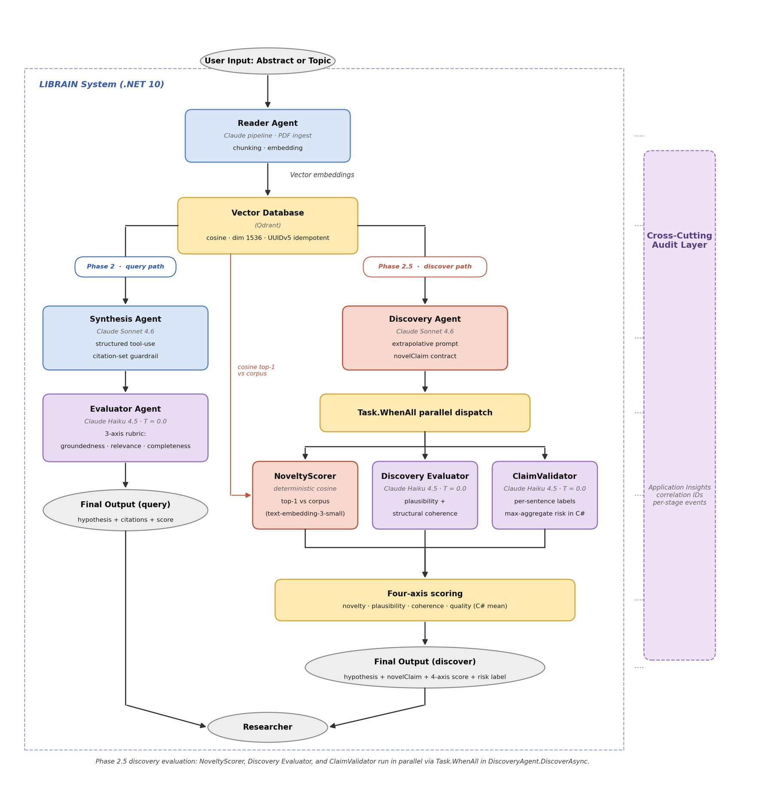
3.1 Reader Agent
Triggered by a paper drop or an arXiv identifier, the Reader Agent is responsible for the entire ingestion pipeline. It extracts text from PDF sources using UglyToad.PdfPig (with a content-order extractor configured to preserve word spacing across multi-column scientific layouts), normalizes the text, and segments it into chunks of up to about 2,000 characters, with a 4,000 character hard cap, split on paragraph then sentence boundaries, and a 300 character overlap between adjacent chunks, which is roughly 500 tokens. Each chunk is embedded using OpenAI’s text-embedding-3-small model and persisted in a Qdrant vector collection along with structured metadata (paper identifier, title, authors, year, page number, section heading). Chunk identifiers are deterministic UUIDv5 hashes derived from a project namespace, ensuring that re-ingestion is idempotent. The resulting vector index serves as the immediately searchable and analyzable representation of the underlying corpus, eliminating the need for any separate extraction or organization step.
3.2 Synthesis Agent
The Synthesis Agent acts as the reasoning engine of the simulation. Given a user query, it embeds the query, performs a top-K vector search against the Qdrant collection, and submits the retrieved chunks together with the query to Anthropic Claude Sonnet 4.6 via a structured tool-use prompt. The model is instructed to produce a JSON response containing a hypothesis, a list of citation chunk identifiers, and a self-reported confidence score, and it is forbidden from citing identifiers outside the retrieved set. Citations that fail validation are dropped from the response, and the drop is recorded in the audit log so that prompt-engineering regressions can be detected from telemetry. This grounding loop is what allows the agent to perform a controlled cognitive leap (proposing connections between distant concepts) without drifting into fabrication.
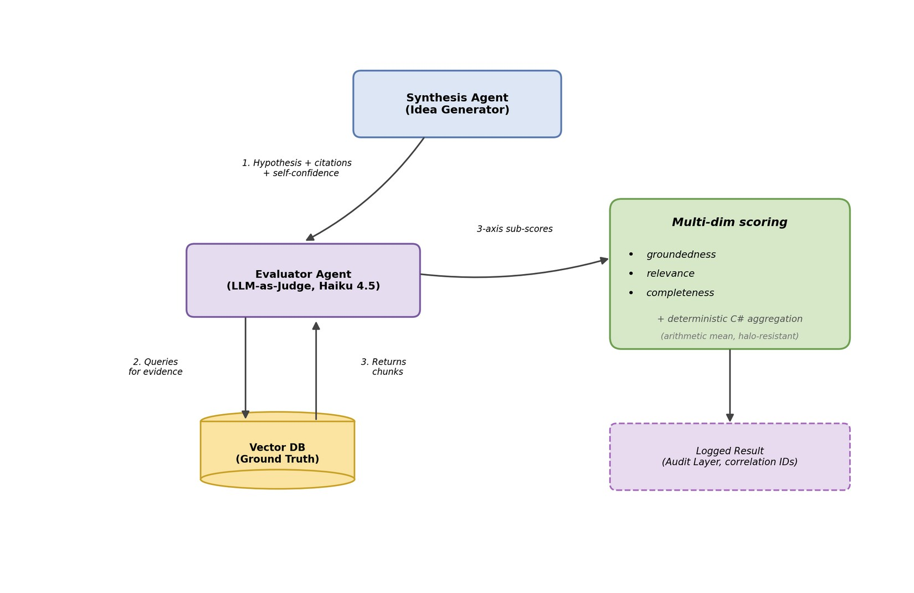
3.3 Evaluator Agent
Acting as an impartial critic, the Evaluator Agent validates each hypothesis against the same evidence base used by the synthesis step. It runs as an LLM-as-a-Judge powered by Claude Haiku 4.5, configured with temperature 0.0 to maximize judging determinism. The output is a multi-dimensional score covering groundedness (does the hypothesis follow from the cited chunks), relevance (does it address the user’s actual query), completeness (does it cover what the cited evidence supports), and an aggregate quality score. The three sub-scores are returned by the language model independently, but the aggregation into a single quality value is computed deterministically in C# (arithmetic mean) rather than by the model itself, because language models tend to apply a halo effect when asked to combine sub-scores. The Evaluator does not see the Synthesis Agent’s self-reported confidence, ensuring that the judgment is independent. Sub-scores that fall outside the [0, 1] interval are clamped, and clamping events are logged so that prompt-engineering regressions can be detected via telemetry.
3.4 Cross-Cutting Audit Logging
To ensure reproducibility and trust, LIBRAIN replaces the originally proposed Archivist Agent with a runtime audit-logging layer that pervades the entire pipeline. Every request is assigned a correlation identifier that flows through the Reader, Synthesis, and Evaluator stages via Microsoft.Extensions.Logging scopes. When configured, Application Insights captures structured events from every stage (embedding generation, vector search, synthesis, and evaluation), recording per-stage chunk counts, token usage, elapsed times, citation-validation outcomes, and the per-dimension scores from the evaluation phase, all keyed by correlation identifier. Any final hypothesis can therefore be traced backwards through retrieval and reasoning to the chunks it depended upon.
3.5 Discovery Agent
Introduced in Phase 2.5 as a parallel pipeline to the Synthesis Agent, the Discovery Agent inverts the citation-grounded guardrail to enable extrapolation beyond the cited evidence. Given one or two topics together with an optional novelty target, it embeds each topic, performs independent top-K vector searches against the Qdrant collection, and submits the union of retrieved chunks to Anthropic Claude Sonnet 4.6 via a structured tool-use prompt. Unlike the Synthesis prompt, which forbids any claim not directly supported by retrieval, the Discovery prompt explicitly invites the model to propose a hypothesis that goes beyond the cited sources, with the unsupported portion returned as an explicit novelClaim field. The pipeline preserves citation discipline where it applies: claims tagged as supportingEvidence still validate against the retrieved set in C# and are dropped from the response if invalid, while novelClaim is exempt from that check by design, flagging the unsupported portion is the contract, not a defect. Discovery Mode is reachable through a separate POST /api/discover endpoint and does not replace the Synthesis-to-Evaluator path.
On the nature of novelClaim
novelClaim captures the part of the hypothesis that goes beyond the retrieved chunks. It is a hypothesis seed, not a verified finding. Citations frame the structural backbone of the hypothesis; novelClaim is the speculative bridge. The four-axis evaluation (novelty, plausibility, structural coherence, quality) makes the grounded-versus-speculative split observable per output. Downstream consumers can route, weigh, or audit novelClaim separately from the citation-backed scaffolding, which is what lets the system extrapolate without drifting into fabrication.
3.6 Discovery Evaluator and Novelty Scoring
Each Discovery hypothesis is scored on a four-axis rubric, two axes from a deterministic scorer and two from an LLM-as-a-Judge. The deterministic NoveltyScorer embeds the novelClaim text with the same OpenAI text-embedding-3-small model used for retrieval, performs a top-1 cosine search against the existing Qdrant corpus, and returns 1 minus the highest similarity as the novelty score. This makes novelty a measurement surface that depends only on embedding geometry, not on model preferences. The Discovery Evaluator Agent runs Claude Haiku 4.5 at temperature 0.0 with forced tool use to return two LLM-judged sub-scores, plausibility (does the novelClaim follow logically from the cited evidence even if not stated directly) and structural coherence (is the hypothesis a well-formed, testable scientific statement), together with a free-text critique. The aggregate quality score is the arithmetic mean of all four axes, computed in C# rather than by the language model, mirroring the halo-resistance pattern of the Phase 2 Evaluator. As with Phase 2, every stage emits structured audit events keyed by correlation identifier so the per-axis decision and the underlying retrieval set can be reproduced from telemetry alone.
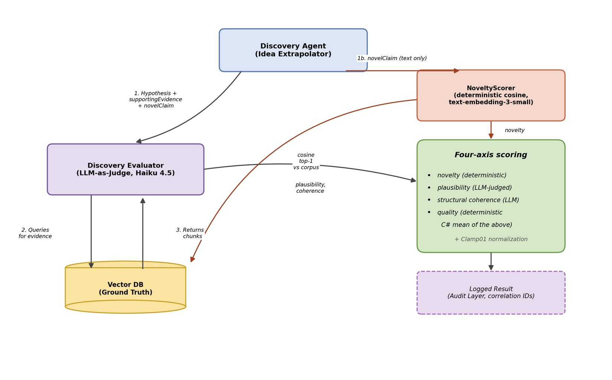
| Component | Primary Role | Key Technology and Method |
|---|---|---|
| Reader Agent | Autonomous ingestion, chunking, embedding, semantic indexing | PdfPig, OpenAI text-embedding-3-small, Qdrant, deterministic UUIDv5 IDs |
| Synthesis Agent | Retrieval-grounded hypothesis generation with citation validation | Claude Sonnet 4.6 via structured tool-use, vector search, citation-set guardrail |
| Evaluator Agent | Independent multi-dimensional judging of each hypothesis | Claude Haiku 4.5 LLM-as-a-Judge (T equals 0.0), deterministic C# aggregation |
| Discovery Agent | Extrapolative hypothesis generation beyond cited evidence, flags unsupported portion as novelClaim | Claude Sonnet 4.6 via structured tool-use, selective citation validation (supportingEvidence only) |
| Discovery Evaluator | Four-axis evaluation of discovery hypotheses, combines deterministic novelty with LLM judging | Claude Haiku 4.5 (plausibility, coherence), deterministic NoveltyScorer (cosine top-1), C# aggregation |
| Audit Layer | End-to-end traceability and reproducibility | Microsoft.Extensions.Logging scopes, correlation IDs, Application Insights |
| Claim Validator | Per-sentence factuality scoring over novelClaim content | Claude Haiku 4.5 at T equals 0.0 via forced tool use, per-sentence GROUNDED / EXTRAPOLATED / RISKY labels, max-aggregate hallucination probability in C# |
Table 2. Summary of agent roles and core technologies in the implemented system.
3.7 Claim Validator and Per-Sentence Factuality Scoring
Each Discovery hypothesis carries a novelClaim field that, by construction, contains content the model inferred beyond the retrieved evidence. The ClaimValidatorAgent runs Claude Haiku 4.5 at temperature 0.0 with forced tool use, sentence-by-sentence over novelClaim, and returns a categorical label in the set GROUNDED, EXTRAPOLATED, RISKY together with a hallucination probability per sentence. The aggregate risk score is the maximum probability across sentences, deterministically computed in C# rather than by the language model, so that a single risky sentence cannot be averaged away by benign ones. The agent runs in parallel with the NoveltyScorer and the Discovery Evaluator inside the /api/discover pipeline via Task.WhenAll, which keeps the wall-clock cost of adding the contract below the duration of the slowest of the three concurrent calls.
3.8 Worked Example: End-to-End Pipeline Trace
The preceding subsections describe each pipeline stage in isolation. To make the abstract data flow concrete, this subsection traces a single Discovery-Mode query end to end, using the pre-registered topic pair pair-02 (retrieval-augmented generation by de novo molecular design). Every artifact shown below is taken directly from the committed run record experiments/phase-b/results/pair-02.json; no values are paraphrased.
Step 1, User input. A client opens a Discovery-Mode session by POSTing a topic pair and a retrieval budget. The request carries no candidate hypothesis, no seed text, and no source documents, only the two domains to be bridged and topK, the number of chunks the Reader is allowed to retrieve per topic. POST /api/discover with body {topicA: "retrieval-augmented generation", topicB: "de novo molecular design", topK: 5}.
Step 2, Reader retrieval (the grounding set G). The Reader embeds each topic with text-embedding-3-small (1536-dim, cosine) and queries Qdrant, returning the most similar chunks across the corpus. The six chunks that survive into G for this run (each tagged supportType = "direct") span all three relevant papers: the original RAG paper (2005.11401, chunks 0, 2, 10 from front matter, Introduction, and Related Work), the PharmAgents paper (03-pharmagents, chunks 7 and 6 from Lead Optimization and Lead Identification), and the chemistry survey (2508.14111, chunk 38 from Organic Synthesis and Reaction Optimization). The per-chunk cosine similarity column is not persisted in pair-02.json; only chunk identity is recorded, which is what the citation contract requires.
Step 3, Discovery Agent (fenced hypothesis generation). The Discovery Agent (Claude Sonnet 4.6) receives G and is instructed to propose one hypothesis that bridges the two topics and goes beyond what any single source states, to ground every supporting claim via tool-use, and to isolate the single most speculative sentence into a separate novelClaim field. The agent returns a structured tool-use response in which the hypothesis proposes replacing RAG’s text index with a chemical knowledge base so a generative chemistry model can retrieve reaction precedents and binding reports at inference time, with supportingEvidence citing all six chunks above (all supportType = "direct"). The single most speculative sentence is fenced into novelClaim: "Crucially, such a system would self-evolve over successive design cycles by accumulating an experience database of past docking results and interaction reports, allowing the retriever to progressively sharpen its relevance signal toward high-affinity, drug-like chemical space."
Step 4, NoveltyScorer (deterministic distance). The NoveltyScorer embeds the novelClaim and computes its cosine similarity to the nearest corpus chunk; novelty = 1 minus max_similarity, a purely deterministic measurement with no LLM in the loop. For this claim, novelty = 0.37730175.
Step 5, Discovery Evaluator and ClaimValidator (parallel). The fenced output is fanned out to two independent Haiku 4.5 (T = 0.0) judges running concurrently via Task.WhenAll. The four-axis Discovery Evaluator returns novelty = 0.3773 (from Step 4), plausibility = 0.62, structural coherence = 0.75, and aggregate quality = 0.5824. In parallel, the ClaimValidator scores per-sentence factuality over the novelClaim content. For this run there is exactly one claim, labeled GROUNDED (status = 0) against 03-pharmagents:7, because the PharmAgents paper explicitly describes an experience database that records prior designs and lets agents self-evolve. Factual-hallucination probability = 0.08; aggregateRisk = 0.08.
Step 6, Audit log (correlation-keyed trace). Every stage emitted an Application Insights event (export was configured for this trace) under the same correlation ID (9dc74671-678d-439f-9438-35ccd2739391), with per-stage duration, token usage, and prompt-cache fields, so any output is reproducible end to end. The retrieval stage records 6 retrieved chunks; the synthesis stage logs InputTokens, OutputTokens, cacheRead, and cacheCreate alongside the message "dropped 0 invalid supporting_evidence (6/6 cite a retrieved chunk)", the citation contract in action; the novelty, claim-validation, and evaluation stages each contribute their own scored output, all under one correlation ID. The per-stage token counts illustrate the log shape; the exact counts are not stored in the result JSON. This single artifact lets a reader who skims Section 3 anchor the abstract pipeline (retrieve, fence, score, validate, log) to one concrete run with real numbers.
4. Engineering Decisions and Challenges
This section outlines the technical requirements for each component and the concrete implementation challenges encountered during Phases 1 and 2. Several of these challenges produced deliberate, documented architectural decisions, not incidental fixes, and they are reported here in that spirit.
4.1 Reader Agent: Requirements and Challenges
Requirements. A vector store that supports both high-dimensional similarity search and per-chunk metadata filtering (paper, year, section), a deterministic ingestion pipeline so that re-runs do not duplicate points, and a chunking strategy that preserves enough context for grounding while staying within embedding-model limits.
Challenges encountered.
- PDF text extraction on multi-column layouts. Default PdfPig text extraction silently corrupted word boundaries on two-column scientific PDFs, which collapsed downstream section detection (0 of 15 sections recognized). We switched to PdfPig’s ContentOrderTextExtractor and recovered 17 of 18 sections. The single remaining miss is an edge-case heading the extractor does not pick up; we did not investigate the specific cause because the fix-vs-investigate cost ratio did not justify it on a one-section gap. The episode is what convinced us that silent corruption of input text matters more than passing unit tests, because unit tests over a clean fixture would still have gone green on the broken extractor while the embeddings produced on real arXiv PDFs were garbage.
- Embedding rate limits. OpenAI Tier 1 imposes a 40 K tokens-per-minute ceiling on text-embedding-3-small. The original 250 K-token batch budget triggered 429 responses. We lowered the batch budget to 35 K tokens and added a 1.5-second inter-batch pace, which absorbs the limit without operator intervention.
- Idempotent identifiers. .NET 10 ships with Guid.CreateVersion7 but not v5. We added a small UUIDv5 (SHA-1) helper that derives deterministic point IDs from a project namespace and chunk key. Re-ingesting the same paper updates existing points instead of duplicating them in Qdrant.
4.2 Synthesis Agent: Requirements and Challenges
Requirements. A reasoning-capable LLM that can absorb several thousand tokens of retrieved context and produce structured output, with reliable mechanisms for forbidding citations to chunks that were not retrieved.
Challenges encountered.
- Hallucination drift. Free-form prompting produced confident-sounding answers with fabricated citations even when retrieval was good. We switched from prose output to a structured tool-use schema and validated the cited identifiers against the retrieved set in C#, dropping any that fell outside it.
- Prompt balance. The system prompt must encourage synthesis (connect ideas across the cited evidence) without inviting fabrication (if the evidence is insufficient, say so). After iterative refinement we settled on an explicit unsupported_claims field that the model can populate when the evidence is thin, giving the system honest signal instead of rationalized output.
4.3 Evaluator Agent: Requirements and Challenges
Requirements. A judging model that is cheaper and faster than the synthesis model, configured for determinism, and a rubric that resists the halo effect typical of single-score LLM judging.
Challenges encountered.
- Halo effect on aggregate scores. When asked to produce a single overall score, the model tended to anchor on whichever sub-dimension was most salient in the prompt and let the others drift. The mitigation, drawn from the RAGAS and TruLens literature, is to elicit three independent sub-scores from the model (groundedness, relevance, completeness) along with three qualitative artifacts (a critique, an unsupported claims list, and a missing evidence list), and to aggregate the three numerical sub-scores deterministically in code.
- Score range pollution. Even with explicit instructions, the model occasionally returned values outside [0, 1] or omitted a field. We added a defensive Clamp01 helper that normalizes out-of-range values; clamping events are logged at Information level so we can detect prompt-engineering regressions from telemetry. A missing or non-numeric score was at first recorded as 0; it now raises an error instead (Section 8.5).
4.4 Stack Decision: From Cosmos DB to Qdrant Cloud
The original plan was to use Azure Cosmos DB (NoSQL, Vector Search) as the primary vector store, in part to align with the Microsoft AI-200 certification path. During Phase 1 development, two practical issues surfaced. First, the Cosmos emulator on macOS Apple Silicon is unstable, complicating local development. Second, paying for a Cosmos workload during the prototype phase yielded no learning advantage over a free local alternative. We decided pragmatically to build against Qdrant 1.17 in a local Docker container and confined all data access to a single repository class, so any backend swap stays a one-file change. Phase 2.5 closed the loop: production hosting moved to the Qdrant Cloud free tier (AWS Frankfurt, 0.5 vCPU, 1 GB RAM, 4 GB disk), running the same engine, the same vector dimension, the same cosine distance metric, and the same UUIDv5 chunk identifiers as local development. The 218-chunk Phase 2 corpus uses well under one percent of the free-tier 250K-vector ceiling, the .NET configuration auto-selects between local and cloud based on the presence of an API key in user-secrets, and there is no schema migration between dev and production, they are the same code path. That hosted deployment is no longer live: the current setup runs Qdrant locally through Docker Compose (Section 8.5). Cosmos DB was retired as a production target post-Phase 2.5, since the local-versus-cloud parity removed the only remaining reason to migrate. This reflects a general principle of the project: choose the cheapest infrastructure that proves the architecture, and only pay for production once a paid alternative offers something the free one cannot.
4.5 Discovery Agent: Requirements and Challenges
Requirements. A discovery pipeline that runs in parallel with citation-grounded synthesis without compromising it, a contract that distinguishes supported claims from extrapolated ones without hiding the difference, a deterministic novelty signal that does not depend on the model’s self-report, and an evaluation rubric that can score hypotheses whose value lies in stepping outside the cited evidence.
Challenges encountered.
- Premature abstraction between Synthesis and Discovery. The two agents share surface shape (retrieve, prompt, return tool-use JSON, validate citations) but differ in intent: Synthesis is grounded by contract, Discovery extrapolates by contract. Extracting a shared base class was rejected because the divergence is in the system prompt and the citation guardrail policy, not in the orchestration shell. Keeping them as parallel concrete classes preserves clarity and avoids inheritance gymnastics that would obscure the most important contract difference.
- Selective citation validation. A direct port of Phase 2’s rule that every citation must exist in the retrieved set would have dropped the entire novelClaim, which is the part of the response that is supposed to step beyond retrieval. The fix is to apply citation validation only to the supportingEvidence array, treat novelClaim as an unvalidated free-text field, and rely on the deterministic NoveltyScorer to quantify how far the novel part actually departs from the corpus. The validation guardrail still catches fabricated citations on the supported portion of the hypothesis, the novel portion is measured; it is not gated.
- noveltyTarget request knob. An initial design exposed a noveltyTarget parameter (range [0.0, 1.0]) intended to let callers steer how aggressively the model extrapolated. A pre-deployment validation protocol, three runs at noveltyTarget equals 0.2 and three at noveltyTarget equals 0.9 with retrieval held constant, measured a mean novelty differential of 0.0184 against a 2-sigma noise band of 0.0668, with the direction inverted. The knob did not control behavior in the intended way and was retired before reaching production users. The Discovery prompt now invites extrapolation unconditionally and the deterministic NoveltyScorer measures the result. The empirical detail is reported in Section 7.4.
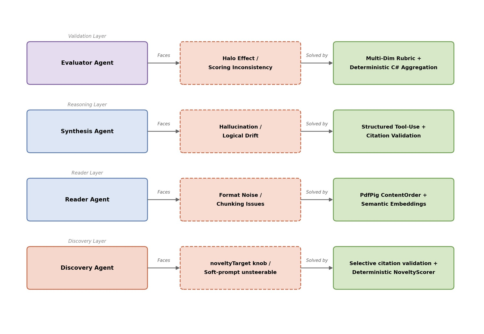
| Component | Specific Challenge | Mitigation Strategy |
|---|---|---|
| Reader Agent | Word-spacing corruption on two-column PDFs | Use PdfPig ContentOrderTextExtractor, manual validation gate before commit |
| Reader Agent | Embedding API rate limits (40 K TPM, Tier 1) | Lower batch token budget from 250K to 35K, insert 1.5 s inter-batch pacing |
| Synthesis Agent | Fabricated citations under free-form prompting | Structured tool-use schema, post-hoc citation-set validation in C# |
| Synthesis Agent | Tension between novelty and grounding | Explicit unsupported_claims field, iterative prompt refinement |
| Evaluator Agent | Halo effect on aggregate score | Multi-dimensional rubric, deterministic C# aggregation |
| Evaluator Agent | Out-of-range or missing sub-scores | Defensive Clamp01 normalization of out-of-range scores with telemetry-logged clamping events; a missing or non-numeric score is now an error |
| Stack | Cosmos emulator instability on macOS ARM | Pivot to Qdrant for the MVP, with all data access confined to a single repository class |
| Discovery Agent | Naive port of citation validation would drop the entire novelClaim | Selective citation validation: supportingEvidence validated against retrieval, novelClaim exempt by contract, NoveltyScorer measures novelty |
| noveltyTarget knob | Soft-prompt instruction did not measurably steer model behavior (mean differential 0.0184 vs 2-sigma band 0.0668) | Pre-deployment validation gate retired the knob before production, deterministic NoveltyScorer measures the result instead |
Table 3. Identified technical challenges and the corresponding mitigation strategies, drawn from the Phase 1 and Phase 2 implementation log.
5. Datasets and Tools
This section details the physical resources and software architecture used in the LIBRAIN implementation, prioritizing function and reproducibility over unnecessary complexity.
5.1 Data Sources and Preparation
To observe the system’s reasoning capabilities without the noise of millions of documents, the prototype operates over a small, focused dataset. The Phase 2 evaluation corpus consists of five open-access papers from arXiv covering retrieval-augmented generation, hypothesis generation, and agentic AI for scientific discovery (arXiv:2005.11401, 2503.08979, 2504.05496, 2505.04651, 2508.14111). These papers were selected because they form a connected sub-graph of the literature. A small corpus is a feature, not a limitation here: it lets us verify that the system retrieves the canonically correct paper for a given query, instead of masking weaknesses behind volume.
5.2 Preparation Tools
Text extraction is handled by UglyToad.PdfPig (a managed .NET library) with the ContentOrderTextExtractor strategy. A C# segmentation service breaks each paper into chunks of up to about 2,000 characters, with a 4,000 character hard cap, split on paragraph then sentence boundaries and a 300 character overlap between adjacent chunks (roughly 500 tokens), attaching structured metadata (paper identifier, title, authors, year, section heading, page number) to each chunk before embedding. The choice of .NET over Python is deliberate: it serves as a counter-example to the assumption that modern LLM systems must be Python-first, and it aligns the project with the EU senior-backend ecosystem in which it is intended to function as a portfolio piece.
5.3 Knowledge Storage
Chunk vectors are stored in Qdrant 1.17 in both development and production. During development the system runs against a local Docker container with a persisted volume. The Phase 2.5 deployment was hosted on the Qdrant Cloud free tier in AWS Frankfurt; the current setup runs Qdrant locally through Docker Compose, and no hosted deployment is live. The two environments are the same engine with the same vector dimension (1536), the same cosine distance metric, and the same deterministic UUIDv5 point identifiers, so promotion from dev to production is a configuration change driven by the presence of an API key in user-secrets, not a migration. Each point uses a deterministic UUIDv5 identifier so that ingestion is idempotent and metadata is denormalized onto each point (Qdrant has no joins). A single repository class encapsulates all data access, so any future change of backend stays contained to that one file. Metadata fields (paper, year, section) are denormalized onto every Qdrant point so that filter-on-payload queries are available at the storage layer, with the query-API surface for them deferred to a later phase. The original plan to migrate production storage to Azure Cosmos DB Vector Search was retired post-Phase 2.5 once the local-versus-cloud parity removed the only practical reason to switch backends.
5.4 Core Reasoning Engine
The cognitive processing layer uses Anthropic Claude in two roles, accessed through the Anthropic.SDK NuGet package. Synthesis runs on Claude Sonnet 4.6, which carries the heavier reasoning burden. It is configured with a small positive temperature to permit the cognitive leap. Evaluation runs on the cheaper and faster Claude Haiku 4.5 at temperature 0.0 to maximize judging determinism. Embeddings are produced by OpenAI’s text-embedding-3-small. All credentials are managed via .NET user-secrets in development. A hosted deployment would keep these secrets in Azure Key Vault; no hosted deployment is live, and the Docker Compose setup reads them from a local, git-ignored environment file. Section 6.5 documents a Phase B extension to 13 papers. This section describes the original Phase 1, Phase 2, and Phase 2.5 seed corpus.
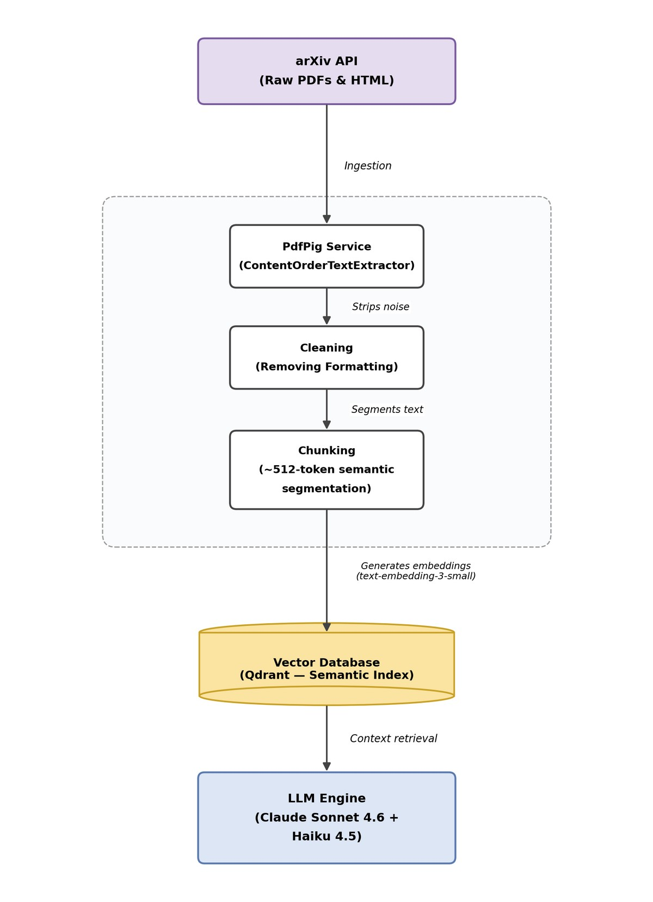
6. Experiments
The objective of these experiments is not to benchmark the raw intelligence of any underlying language model, but to validate the process: to observe whether a structured multi-agent system can successfully simulate the mechanics of discovery in a controlled scientific playground. Experiments 1 and 2 capture the behavior of the Reader and Synthesis Agents end-to-end. Experiment 3 establishes the auditing characteristics of the Evaluator on a representative single-run query. Experiments 4 and 5 validate the Discovery pipeline and exercise it at broader corpus scale. Experiments 6 and 7, added in this revision, place LIBRAIN in a controlled three-system baseline comparison and bring human evaluation into the picture. The AFTER-FIX pilot (Section 7.8) and the three-rater replication (Section 7.9) extend Experiment 7 with empirical data on the Phase 3.A.5 claim-validation contract. Experiment 8 (Section 6.8) runs Discovery Mode on 46 mechanism-level topic pairs in nine fields, most of them outside the original corpus, after the hardening described in Section 8.5.
6.1 Experiment 1: Reading and Structuring
Goal. Verify that the Reader Agent autonomously ingests and semantically organizes raw research text, end-to-end.
Setup. The system processed five arXiv papers spanning RAG and agentic AI.
Active component. Reader Agent.
Result. All five papers ingested successfully, producing 218 chunks total in Qdrant. A canonical query (How does retrieval-augmented generation mitigate hallucination) returned a top-5 dominated entirely by chunks from arXiv:2005.11401 (Lewis et al., the founding RAG paper). The lazy collection-bootstrap path was exercised exactly once, as designed, and the previously identified ScrollAsync null-offset risk did not materialize. Observed retrieval latency held below 200 ms for top-5 queries against the local Qdrant instance.
6.2 Experiment 2: Synthesis and Citation Grounding
Goal. Assess whether the Synthesis Agent produces logically sound, citation-grounded hypotheses, and whether the citation-validation guardrail successfully blocks fabricated references.
Setup. The structured knowledge base from Experiment 1 was used as the context for a smoke query: How does retrieval-augmented generation mitigate hallucination.
Active component. Synthesis Agent.
Result. The agent returned a hypothesis with four citations, all of which validated against the retrieved set, and all four resolved to chunks from arXiv:2005.11401, the canonically correct source. The hypothesis used appropriate technical terminology (parametric versus non-parametric memory) and accurately described the dual-memory architecture introduced by the cited paper. Self-reported synthesis confidence was 0.92. Synthesis latency was approximately 7 seconds, with a token usage of 6 365 input and 257 output, costing approximately 0.023 USD per synthesis call at current Sonnet 4.6 list prices (uncached; warm-cache cost is lower).
6.3 Experiment 3: Evaluation and Consistency
Goal. Test the stability and transparency of the auditing process: assess whether the Evaluator Agent applies its rubric consistently across runs, and whether the audit trail captures the full reasoning chain.
Setup. A representative query from Experiment 2 is submitted to the Evaluator. A control query (What is the capital of France) is used as a negative case to test the Evaluator’s behavior on out-of-corpus topics. The original prediction was that relevance would drop, but the actual observation was that all three sub-scores held at 1.0 because the Synthesis Agent refused to fabricate and the Evaluator correctly rewarded that refusal, itself a positive design outcome. The scope of this experiment is the single-run characterization of the Evaluator’s behavior. Cross-run variance studies are recognized as a complementary line of work.
Active components. Evaluator Agent and Audit Layer.
Observation. On the primary RAG and hallucination query, the Evaluator returned an aggregate quality score of 0.917, with sub-scores of 0.95 (groundedness), 0.95 (relevance), and 0.85 (completeness). The Evaluator deducted 0.15 from completeness for an actual gap in the cited evidence (the cited chunks describe RAG’s architecture but do not detail the cognitive mechanism by which retrieval suppresses hallucination), rather than rubber-stamping the hypothesis. This is the form of judging behavior the rubric was designed to elicit. Application Insights captured stage-by-stage timings, token usage, citation-validation outcomes, and per-dimension scores under a single correlation identifier, supporting the audit-trail completeness criterion. End-to-end query latency, including evaluation, was 13.5 seconds. Cost per query was approximately 0.030 USD.
| Experiment | Focus Area | Active Components | Headline Metric |
|---|---|---|---|
| Exp 1: Reading | Data ingestion and semantic structure | Reader Agent | 5 papers, 218 chunks, retrieval below 200 ms |
| Exp 2: Synthesis | Citation grounding and logical synthesis | Synthesis Agent | 4 of 4 citations valid, confidence 0.92 |
| Exp 3: Evaluation | Judging reliability and audit trail | Evaluator Agent, Audit Layer | Quality 0.917 on primary query, per-stage telemetry captured |
| Exp 4: Discovery | Cross-domain extrapolation and four-axis sensitivity profiles | Discovery Agent, NoveltyScorer, Discovery Evaluator, Audit Layer | NoveltyScorer delta 0.2577 (5 times noise floor), plausibility classified GENUINE SIGNAL (N equals 5), noveltyTarget knob retired |
| Exp 5: Extended Corpus | Cross-domain generalization and portfolio demos | Reader Agent, Discovery Agent, Discovery Evaluator, Audit Layer | 10 of 10 valid runs, three cross-domain demos at quality 0.66, 0.67, 0.59 |
| Exp 6: Baseline | Pipeline-structure ablation, RQ1 and RQ3 | LIBRAIN vs Naive-RAG vs Single-LLM | Retrieval drives plausibility, LIBRAIN gains 31 percent novelty, 0 of 44 measured fabrications |
| Exp 7: Human Eval | Rubric alignment with human judgment, RQ2 | Single-rater blinded pilot | Spearman rho around 0.17 (novelty) and 0.12 (plausibility) at n equals 15, rater confirms novelty advantage |
| Exp 8: New Fields | Discovery in nine fields, mostly outside the original corpus | Reader Agent, Discovery Agent, NoveltyScorer, Discovery Evaluator, Claim Validator, Audit Layer | 46 of 46 runs, 0 of 246 claimed citations dropped, 14 featured, 0.066 USD per run |
Table 4. Summary of the experimental matrix and headline observations.
6.4 Experiment 4: Discovery Mode Validation
Goal. Validate the Discovery pipeline end-to-end: confirm that NoveltyScorer produces a meaningful in-corpus and off-corpus differential, that the noveltyTarget request knob behaves as designed before exposing it to callers, and that the multi-axis evaluation rubric distinguishes signal from noise across repeated runs.
Setup. All Discovery experiments ran against the same 218-chunk Qdrant Cloud corpus used in Experiments 1 through 3. Two locked topic pairs were used throughout: an in-corpus pair (retrieval-augmented generation and hypothesis evaluation) that probes both topics inside the corpus, and an off-corpus pair (retrieval-augmented generation and protein folding dynamics) that places one topic deliberately outside the corpus to elicit a cross-domain extrapolation.
Active components. Discovery Agent, NoveltyScorer, Discovery Evaluator Agent, and Audit Layer.
Result. Four sub-experiments were run. (a) NoveltyScorer baseline: in-corpus topic string scored 0.3861, off-corpus topic string scored 0.6438, a differential of 0.2577. We established the 0.05 noise floor empirically by re-running the same topic strings against the NoveltyScorer across repeated embedding requests and taking the spread of cosine-distance values as the floor. The 0.2577 differential is five times that floor, confirming that cosine-distance novelty discriminates corpus membership cleanly at the embedding layer. (b) noveltyTarget validation gate: three runs at noveltyTarget equals 0.2 (mean 0.3873, std 0.0331) versus three runs at noveltyTarget equals 0.9 (mean 0.3689, std 0.0334), with retrieval held identical across all six. The mean differential of 0.0184 fell below the 2-sigma threshold of 0.0668 (ratio 0.276), and the direction inverted. The knob failed and was retired. (c) End-to-end smoke pairs: in-corpus quality 0.4997 (novelty 0.3992), off-corpus quality 0.5279 (novelty 0.4838). The 0.0846 end-to-end novelty differential preserves about one third of the standalone signal, with the compression mechanism analyzed in Section 7.4. (d) Cross-run consistency study, N equals 5 per pair: plausibility classified as GENUINE SIGNAL (in-corpus 0.498 plus or minus 0.143, off-corpus 0.612 plus or minus 0.115), structural coherence classified as AMBIGUOUS as floor (in-corpus 0.702 plus or minus 0.020, off-corpus 0.728 plus or minus 0.038), and novelty stable within 0.03 standard deviation. Total Phase 2.5 experimental cost was approximately 0.74 USD across 23 LLM-judged runs. Full per-run telemetry is captured in the audit log under Phase 2.5 correlation identifiers.
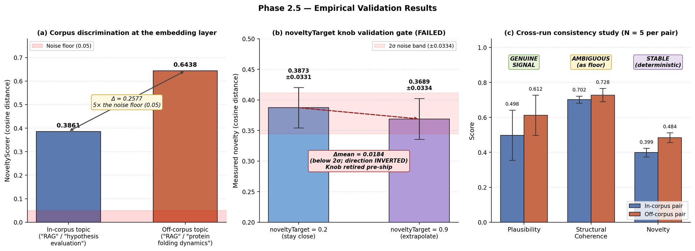
6.5 Experiment 5: Extended Corpus Demonstrations (Phase B)
Goal. Validate Discovery Mode’s cross-domain capability beyond the original five-paper RAG and agentic-AI corpus, and produce concrete demonstrations for portfolio dissemination.
Setup. The Phase 2 and 2.5 corpus was extended from 5 to 13 papers, adding eight open-access arXiv works spanning drug discovery (ChemCrow, arXiv:2304.05376, Foundation Model in Biomedicine, arXiv:2503.02104, PharmAgents, arXiv:2503.22164), climate and weather forecasting (GraphCast, arXiv:2212.12794, Pangu-Weather, arXiv:2211.02556, Aurora, arXiv:2405.13063), and computational neuroscience (Centaur, arXiv:2410.20268, Large Language Models for EEG, arXiv:2506.06353). The expanded corpus contains 610 chunks across all 13 papers (Phase 1 seed: 5 papers and 218 chunks, Phase B: 8 papers and 392 chunks). The live corpus has since grown to 55 papers and 2,210 chunks (41 papers and 1,766 chunks at the time of the robustness sweep in Section 7.10, then 14 arXiv papers added for Experiment 8), but every pre-registered experiment and every table in Sections 6.1 to 7.10 uses the fixed 13-paper, 610-chunk reproduction corpus described here. The robustness sweep and Experiment 8 (Sections 6.8 and 7.11) ran on the larger live corpus. Papers were selected by recognition (well-known systems papers and major recent surveys) and by maintaining at least one keyword bridge to the existing RAG and agentic-AI corpus to support retrieval.
Active components. Reader Agent (for ingestion of new papers), Discovery Agent, NoveltyScorer, Discovery Evaluator Agent, and Audit Layer.
Protocol. Ten topic pairs were defined a priori before any results were inspected, distributed as three drug-discovery pairs, three climate and energy pairs, two neuroscience and learning pairs, and two pure cross-domain pairs (where one topic explicitly comes from a distant domain). All ten were executed once sequentially via POST /api/discover with topK equals 5. No retries, no parameter sweeps. We cherry-picked only after collecting all ten outputs, using a fixed scoring formula that combined a manual legibility score (1 to 5), a manual surprise score (1 to 5), and a quality-score floor of 0.6, to select three demonstrations for portfolio publication.
Result. Ten of ten runs returned HTTP 200 with zero citation-contract violations. All supportingEvidence entries resolved to the retrieved chunk set as specified in Section 3.5. Quality scores ranged from 0.43 to 0.61, plausibility (the LLM-judged content-discriminating axis identified in Section 7.4) ranged from 0.28 to 0.62. The three cherry-picked runs were: (i) retrieval-augmented generation and de novo molecular design (quality 0.58, plausibility 0.62), (ii) weather foundation models and renewable energy planning (quality 0.61, plausibility 0.62), (iii) drug discovery and climate adaptation (quality 0.57, plausibility 0.62). Per-pair detailed scoring is reported in Table 5.
| # | TopicA and TopicB | Quality | Plausibility | Novelty | Coherence |
|---|---|---|---|---|---|
| 1 | large language models and drug-target interaction prediction | 0.4644 | 0.35 | 0.3232 | 0.72 |
| 2 | retrieval-augmented generation and de novo molecular design | 0.5824 | 0.62 | 0.3773 | 0.75 |
| 3 | agentic AI and clinical trial design | 0.6075 | 0.62 | 0.4524 | 0.75 |
| 4 | deep learning weather forecasting and agricultural yield prediction | 0.6041 | 0.62 | 0.4422 | 0.75 |
| 5 | climate adaptation and language models | 0.5871 | 0.62 | 0.4313 | 0.71 |
| 6 | weather foundation models and renewable energy planning | 0.6078 | 0.62 | 0.4535 | 0.75 |
| 7 | large language models and human learning curriculum | 0.4334 | 0.28 | 0.4001 | 0.62 |
| 8 | brain inspired architectures and hypothesis generation | 0.4371 | 0.35 | 0.3414 | 0.62 |
| 9 | protein folding and weather forecasting | 0.4917 | 0.35 | 0.4051 | 0.72 |
| 10 | drug discovery and climate adaptation | 0.5689 | 0.62 | 0.4067 | 0.68 |
Table 5. Phase B extended corpus demonstration results across 10 topic pairs. All ten pairs executed once sequentially against the 13-paper corpus.
Cost. End-to-end Phase B experimental cost was approximately 0.55 USD, comprising approximately 0.10 USD for 8-paper ingestion (OpenAI text-embedding-3-small) and approximately 0.45 USD for ten Discovery runs (Claude Sonnet 4.6 synthesis plus Claude Haiku 4.5 evaluation per call). Discussion of the three cherry-picked outputs and what they reveal about cross-domain generalization is reported in Section 7.5.
6.6 Experiment 6: Three-System Baseline Comparison
Goal. Isolate the contribution of LIBRAIN’s pipeline architecture from the contribution of retrieval and the contribution of the underlying language model. The hypothesis is that removing LIBRAIN’s design additions (citation-validation contract, novelClaim fence, agent decomposition into Synthesis and Evaluator) while keeping retrieval and the same model produces a different output profile. The change is in the shape of the output, not in absolute score level. This experiment provides the data underlying RQ1 (traceability) and RQ3 (fabrication-rate robustness).
Setup. Three systems were exercised on the same ten Phase B topic pairs, with the same thirteen-paper Qdrant corpus and the same Anthropic Claude Sonnet 4.6 model for generation. The systems differ only in pipeline structure. Table 1 (Section 2.5) defines the configuration matrix.
Single-LLM ablates retrieval entirely. The model receives only the topic pair in a plain-text system prompt and generates a hypothesis in free text, without any external evidence and without structured output. Naive-RAG retains the retrieval step (identical to LIBRAIN’s Discovery Agent retrieval at top-K equals 5 per topic, deduplicated, ordered for determinism) and uses a forced structured tool call to extract claimed citations. It does not enforce a citation-validation contract: claimed citations are recorded verbatim and resolved against the retrieved set only post-hoc, providing the data for the RQ3 fabrication-rate comparison. LIBRAIN is the full pipeline as documented in Section 3.5: the Discovery Agent with inverted-extrapolation prompt, the citation-validation contract that drops fabricated chunk references before evaluation, the novelClaim field that separates speculative content from grounded synthesis, and the Discovery Evaluator on the four-axis rubric.
All three systems are scored by the same Discovery Evaluator Agent (Claude Haiku 4.5, temperature 0.0) on plausibility and structural coherence, and the same NoveltyScorer (cosine distance against the same Qdrant corpus) on novelty. Quality is the C# arithmetic mean of the three sub-scores in all three systems, computed identically. This isolates pipeline-structure differences from evaluator-implementation differences.
Active components. LIBRAIN uses the Reader Agent (corpus already ingested in Phase B), the Discovery Agent, the NoveltyScorer, the Discovery Evaluator Agent, and the Audit Layer. The Naive-RAG baseline uses the Reader Agent (retrieval only), the NaiveRagAgent, the NoveltyScorer, the Discovery Evaluator Agent, and the Audit Layer. The Single-LLM baseline uses the SingleLlmAgent, the NoveltyScorer, the Discovery Evaluator Agent, and the Audit Layer.
Protocol. Each topic pair was executed once per system, sequentially, with topK equals 5 where applicable. No retries, no parameter sweeps, no per-pair tuning. The ten topic pairs are the same as those used in Section 6.5 (Phase B extended corpus demonstrations). Citation fabrication for the Naive-RAG baseline is measured post-hoc by resolving each claimed citation entry against the retrieved chunk set (paper_id and chunk_index match). Unresolved claims are counted as fabricated.
Result. Thirty runs completed (10 pairs by 3 systems). One transient Anthropic API error on the Naive-RAG run for drug-discovery by climate-adaptation was retried once and succeeded. All runs returned HTTP 200. No contract violations occurred in LIBRAIN runs: citation validation dropped 0 entries across the 10 LIBRAIN runs, matching the Phase B finding that Sonnet 4.6 with the Discovery prompt produces honest citations on this corpus. Per-pair scores are reported in Table 7 (Section 7.6), and aggregate analyses including RQ1 and RQ3 conclusions appear in Section 7.6. Total Phase B baseline experimental cost was approximately 0.28 USD (about 0.06 USD for the 10 Single-LLM runs and 0.22 USD for the 10 Naive-RAG runs).
6.7 Experiment 7: Single-Rater Pilot Evaluation of the Four-Axis Rubric
Goal. Provide initial alignment data between the automated four-axis evaluator (Claude Haiku 4.5 plus NoveltyScorer) and human judgment on the same outputs. This experiment is a single-rater pilot, a preliminary and intentionally scoped study that produces actionable RQ2 evidence while acknowledging the inter-rater agreement gap as an explicit limitation. A three-rater follow-up reporting inter-rater agreement and Spearman rho on the AFTER-FIX pilot outputs is presented in Section 7.9 and Tables 11 and 12.
Setup. Fifteen hypotheses were selected from the Section 6.6 baseline comparison runs, namely five topic pairs by three systems (LIBRAIN, Naive-RAG, Single-LLM) per pair. The pair selection was strategic, intended to span the score-distribution space without oversampling any single regime.
| Pair | Selection rationale |
|---|---|
| 01 (LLM and drug-target) | All three systems clustered at mid-low quality (0.43, 0.59, 0.46), testing borderline discrimination |
| 02 (RAG and molecule) | All three systems clustered at high quality (0.66, 0.63, 0.66), testing tie discrimination |
| 06 (Weather and energy) | LIBRAIN highest, Single-LLM lowest (0.67, 0.64, 0.47), testing strong-discrimination case |
| 09 (Protein and weather) | Naive-RAG sharply higher than the other two (0.46, 0.63, 0.48), testing Naive advantage |
| 10 (Drug and climate) | All three within 0.06 of each other (0.59, 0.57, 0.62), testing tied-at-top discrimination |
Pair selection rationale for the single-rater pilot, designed to span the score-distribution space.
Active components. A single human rater (the first author) scored each of the fifteen outputs on the four-axis rubric. The rater is also the system’s author. This is the central limitation of the pilot, addressed explicitly in Section 7.7 and motivating the three-rater replication subsequently presented in Section 7.9. The pilot design choice was made deliberately. The single-rater pilot was later extended into a three-rater replication (Section 7.9), where two additional independent raters re-scored the AFTER-FIX outputs blind. The pilot’s purpose is to produce a first-pass alignment signal between automated and human scoring, sufficient to inform the present conclusions and insufficient to claim full inter-rater validation.
Protocol. Each of the fifteen hypotheses was assigned a blinded system label (A, B, or C) within its topic pair, using a Latin-square arrangement so that each system appeared at each position exactly once across the five pairs. The blinding meaningfully reduces the researcher-bias risk for the single rater, though we acknowledge it does not eliminate it. Although the rater is the author and may infer system identity from output style in some cases, the blinded labels combined with random ordering within pairs disrupt the most direct system-output association.
The rater scored each output on three dimensions.
- Novelty (1 to 5, ordinal): from trivial or well-known (1) to genuinely novel research direction (5).
- Plausibility (1 to 5, ordinal): from fundamentally implausible (1) to publishable hypothesis (5).
- Hallucination (binary, 0 or 1): does the hypothesis contain at least one specific factually wrong claim (for example, a wrong attribution, a fabricated statistic, or a false mechanism stated as established). Speculative claims framed as hypotheses do not count as hallucinations. Only false factual statements do.
Detailed rubric thresholds were committed to before scoring began. The rater did not consult the LLM-as-a-Judge scores or the system identities (visible in unblind-key.csv, intentionally not opened until after scoring) before completing the ratings. Inter-rater agreement (Cohen’s kappa) is not computed in this pilot. It requires two raters by definition. Spearman rho between the single rater’s scores and the LLM-as-a-Judge scores from the Section 6.6 runs is computed and reported as the primary alignment metric. Per-system descriptive statistics on the human-rated outputs are reported alongside.
For hallucination, the comparison required a definitional decision. LIBRAIN’s citation-validation contract drops measure a structurally different phenomenon (fabricated citation references) from human-flagged hallucinations (any false factual claim in the hypothesis text). Both quantities are reported. The appropriate interpretation is discussed in Section 7.7.
Result. The rater completed scoring on all fifteen outputs. Per-axis Spearman rho values (rater versus LLM-as-Judge) and per-system descriptive statistics are reported in Section 7.7. A passing alignment threshold (Spearman rho greater than or equal to 0.4, indicating moderate positive correlation on at least the plausibility axis) was set as the criterion for claiming that the automated evaluator is human-aligned at this pilot scope. The actual rho values, and what they imply for the rubric’s design, are reported in Section 7.7 transparently. Total human-evaluation cost in this pilot was approximately 45 minutes of the rater’s time, one-time. No model API cost (rating is offline).
6.8 Experiment 8: Discovery in New Fields
Goal. Run Discovery Mode on topic pairs chosen at the level of specific mechanisms rather than broad fields, mostly in fields the original corpus did not cover, and measure how often the outputs pass LIBRAIN’s checks after the hardening described in Section 8.5.
Setup. Forty-six runs on 46 distinct topic pairs, in two batches. The first 21 ran against the 41-paper corpus and bridged drug and materials discovery with agentic systems, agriculture and energy with foundation models, and clinical trials with causal and graph methods, plus three new cross-field pairings. For the second batch of 25, 14 arXiv papers on football, sport, web development, programming languages and labour-market studies were added, taking the corpus to 55 papers and 2,210 chunks; every title was checked against the arXiv API before ingest. Of the 25 second-batch pairs, 23 joined a new paper with one already in the corpus, and two (J1 and J5) joined two new papers. Models, prompts and temperatures were those of Sections 3 and 6: Claude Sonnet 4.6 generates, and Claude Haiku 4.5 judges and validates claims. The max_tokens ceiling was 4,096 (Section 8.5), and topK equals 5. Each batch had a hard cap of 2 USD, and cost was computed from the token counts the API logs.
Fields. The runs fall into nine fields: Drug & materials discovery × agents (D5 and D7 are materials science), Agriculture & energy × foundation models, Clinical trials × causal & graph methods, New cross-field pairings, AI × football, AI × sport, AI × web development, Programming languages, and Future jobs. A further requested field, how people would live without money or work, was not run. As stated, "without money" does not hold, since every society needs some way to allocate food, housing and care, and even a universal basic income is money; how people should live without work is a question of values and policy that a literature-grounded tool cannot settle, and arXiv evidence on it is thin. Its researchable part, how AI changes jobs, is covered by the Future jobs pairs.
Active components. Reader Agent (for the 14 added papers), Discovery Agent, NoveltyScorer, Discovery Evaluator Agent, Claim Validator, and Audit Layer.
Protocol. Each pair was run once. Featured results were chosen by reading every output, with the scores as one input among others: a featured result needed a specific mechanism, a test that could be described, and evidence from more than one paper. The second batch also required at least one featured result per field.
Reproduction. The tables in Section 7.11 are recomputed offline, at no cost, from the committed run files with python3 scripts/summarize_discoveries.py; the runs themselves are repeated, at API cost, with python3 scripts/run_discoveries.py against a running API. The raw outputs, with request, response, cost and correlation identifier for every run, are in experiments/featured-discoveries/ (first batch) and experiments/new-areas-discoveries/ (second batch, with the list of added papers); each folder also holds a ranking table and the featured selection with its reasons.
7. Results and Discussion
This section reports the behavior observed during smoke testing and discusses what those results imply about the design. Anticipated outcomes from the original proposal are matched against measured results. Sections 7.5 and 7.7 extend this discussion to the cross-system baseline experiment and the single-rater pilot evaluation introduced in Section 6. Section 7.11 reports Experiment 8.
7.1 Quality of Semantic Organization
The Reader Agent successfully clusters documents by conceptual similarity, not keyword overlap. The success indicator from the original proposal was that a query for retrieval-augmented generation should surface the canonical Lewis et al. paper, even when its title does not appear in the query. This was met: the top five chunks for that query came entirely from arXiv:2005.11401. The originally feared failure mode (chunks too small to preserve semantic context) was avoided by the character-based chunking strategy described in Section 3.1. Section detection, which is downstream of chunk quality, recovered from 0 of 15 to 17 of 18 sections after the PdfPig extraction strategy was corrected, validating the broader observation that ingestion-layer quality dominates retrieval-layer quality.
7.2 Hypothesis Synthesis: Trade-off Between Novelty and Grounding
The critical metric for the Synthesis Agent is the trade-off between creativity and plausibility. The smoke results land near the target zone: high plausibility (groundedness 0.95, relevance 0.95) with moderate-to-high informational density (completeness 0.85). The Evaluator’s 0.15 completeness deduction is methodologically encouraging, since it demonstrates that the judge does not rubber-stamp confident-sounding output but instead identifies real gaps in the cited evidence. The originally anticipated rejection rate of 30 to 40 percent under high-temperature settings has not been measured systematically, because the citation-set validation drops fabricated indices before they reach the Evaluator, masking the upstream fabrication rate. This is recognized as a complementary line of measurement.
7.3 System Limitations
Latency. End-to-end query latency is approximately 13.5 seconds (synthesis around 7 seconds, evaluation around 6 seconds, plus retrieval and serialization overhead, executed sequentially). This exceeds the original sub-5-second target and reflects the cost of running two LLM calls per query. Response streaming and parallelization of the synthesis and evaluation pair are the applicable mitigations; prompt caching, enabled on every agent, does little here (see Cost below).
Context window. While RAG mitigates the issue, the synthesis model still cannot see the entire library at once and is bottlenecked by retrieval relevance. Cross-domain queries that require chaining evidence across two distant papers have not yet been stress-tested.
Bias propagation. If the input corpus is biased toward a particular position, the system will reinforce that position instead of challenging it. The five-paper Phase 2 corpus was small and topically homogeneous, so this limitation was acute there; the corpus now spans more fields (55 papers) but is still small, and any further expansion benefits from deliberate viewpoint heterogeneity to test bias propagation.
Cost. At approximately 0.030 USD per query, sustained interactive use is feasible at the prototype scale but would need re-engineering (smaller judging models, batched evaluation) at production scale. Prompt caching is not a large lever: it is enabled on every agent, but over the 46 runs of Experiment 8 it took effect only for the Sonnet 4.6 generation call, where 11.4 percent of prompt tokens were read from cache. The two Haiku 4.5 calls per run were never cached, because their prompts are shorter than the minimum length the API caches.
Experiment 8 (Section 7.11) makes four further limitations concrete.
Novelty is relative to the corpus. The novelty score measures distance to the ingested corpus and agrees only moderately with human novelty ratings (pooled Spearman rho of 0.41, Section 7.6.6). A literature-wide novelty check, for example a search of arXiv or Semantic Scholar for the proposed mechanism, is the most useful next addition.
No testable predictions. The hypotheses do not state predictions of their own. Requiring each to name an experiment, an expected result and what would refute it would make the outputs easier to act on and to judge.
Coarse judges. The judges are themselves language models with a coarse scale. Several judges with a finer rubric, and a panel of domain experts for a sample of outputs, would make the scores more informative.
Single samples on one model generation. Each Discovery run is a single sample, and the model generation used here predates the current one. Repeating a subset with newer models, which requires replacing the forced tool calls and fixed temperatures, would show how much of the result depends on the model.
| Dimension | Score | Description of Criteria |
|---|---|---|
| Groundedness | 0.0 (Fail) | The hypothesis contradicts the cited evidence or relies on uncited claims. |
| 1.0 (Pass) | Every load-bearing claim is supported by a cited chunk in the retrieved set. | |
| Relevance | 0.0 (Fail) | The hypothesis does not address the user query. |
| 1.0 (Pass) | The hypothesis answers the user query directly and on-topic. | |
| Completeness | 0.0 (Fail) | Major aspects of the question are unaddressed despite available evidence. |
| 1.0 (Pass) | The hypothesis covers the available evidence comprehensively. | |
| Quality (aggregate) | Computed | Deterministic C# aggregation of the three sub-scores, not produced by the language model. |
Table 6. Multi-dimensional rubric used by the Evaluator Agent. Sub-scores are produced independently by the judging LLM, the aggregate quality score is computed in code to resist halo effects.
7.4 Discovery Mode: Validation and Findings
The Phase 2 pipeline (POST /api/query) answers questions from retrieved evidence and is, by design, conservative. The Synthesis Agent’s system prompt forbids any claim not directly supported by a cited source. Phase 2.5 added a parallel POST /api/discover pipeline that inverts that guardrail: given one or two topics, the system proposes a hypothesis that extrapolates beyond the cited sources and explicitly flags the unsupported portion as novelClaim. The pipeline is evaluated on a four-axis rubric: deterministic novelty (cosine distance to the nearest existing chunk), LLM-judged plausibility, LLM-judged structural coherence, and a deterministic aggregate quality score. Three findings:
The noveltyTarget request parameter, mapped into the system prompt as a soft calibration instruction on a 0.0 (stay close) to 1.0 (extrapolate) scale, did not measurably steer model behavior. A validation protocol ran three calls at noveltyTarget equals 0.2 and three at noveltyTarget equals 0.9 against an in-corpus topic pair, with retrieval held identical across all six runs. The mean novelty differential was 0.0184 against a 2-sigma noise band of 0.0668, below the gate threshold and with the direction inverted. Claims at noveltyTarget equals 0.9 were measurably less novel by cosine distance than at 0.2. We had initially expected the knob to act as a soft calibration surface; the inverted direction was a surprise, and it is what motivated us to run the pre-deployment validation protocol rather than continue tuning. The mechanism is that high-target prompts elicited domain-vocabulary-rich hypotheses landing nearer the corpus center in embedding space, while low-target prompts produced peripheral phrasing that drifted further. We dropped the knob post-empirically. We do not over-read this result: with N equals 3 per condition the test rules out only large steering effects, but the inverted direction at the protocol’s sample size was sufficient to justify retirement before deployment instead of continued tuning. The narrower implication is that cosine-distance novelty, as implemented here, is a measurement surface for what the model produced, not a control surface that prompt instructions can steer. The validation gate worked as designed: a parameter that did not survive its empirical test was retired before reaching production users. The same domain-vocabulary mechanism explains the end-to-end novelty differential: the 0.2577 separation between in-corpus and off-corpus topic strings (measured at the standalone NoveltyScorer) compresses to 0.0846 once the LLM produces hypothesis text, a 33 percent preservation. The signal direction is correct, but its magnitude is below the 0.10 acceptance target. A cleaner future-work direction is using a different embedding model for novelty than for retrieval, so the novelty space is not pre-coupled to the corpus.
A cross-run consistency study (N equals 5 per locked smoke pair) was conducted to disambiguate an early signal that had puzzled us: both pairs returned identical 0.42 and 0.68 plausibility and coherence values on the single-shot pre-deployment smoke, and we wanted to rule out the possibility that the evaluator was anchoring on a single token in the prompt instead of reading the hypothesis. The classification gate (std less than 0.01 means ANCHOR, the model is not actually evaluating, 0.01 less than or equal to std less than or equal to 0.05 means AMBIGUOUS, std greater than 0.05 means GENUINE SIGNAL) placed plausibility firmly in GENUINE SIGNAL territory on both pairs (in-corpus 0.498 plus or minus 0.143, off-corpus 0.612 plus or minus 0.115). The single-shot collision was therefore coincidental, not architectural. Structural coherence landed AMBIGUOUS on both pairs (in-corpus 0.702 plus or minus 0.020, off-corpus 0.728 plus or minus 0.038), with three to four distinct values per pair clustered in a narrow band around 0.70. Structural coherence therefore functions as a well-formedness floor: once a hypothesis meets a baseline of multi-sentence-with-supporting-evidence form, the rubric does not finely discriminate further. Novelty was stable as expected, with within-pair standard deviation under 0.03, the deterministic measure does not depend on novelClaim paraphrase variation. On this two-pair sample, mean plausibility was higher for the off-corpus pair (0.612 versus 0.498); we offer a domain-vocabulary mechanism as hypothesis-generating speculation rather than a confirmed finding. The candidate explanation is that cross-domain prompts force the LLM to articulate the inferential bridge explicitly because the analogy is not shared context, while in-domain prompts permit gloss with assumed shared vocabulary, leaving the missing scaffolding visible to the evaluator. This inverts what a naive novelty and plausibility trade-off would predict and motivates a follow-up study with broader corpus diversity.
Rubric design surfaced a separate observation in the same cross-run study. The four axes have measurably different sensitivity profiles; they do not act as equivalent measures of hypothesis quality. Novelty is a deterministic measurement surface, decoupled from the LLM-judged axes and stable across paraphrases. Plausibility is the content-discriminating LLM-judged signal that varies with the inferential structure of the hypothesis. Structural coherence is a well-formedness gate. It bounds; it does not rank. Most well-written hypotheses cluster in a narrow band around 0.70. The aggregate quality score is a useful proxy that flattens these distinct profiles. The practical implication is that any production deployment of LIBRAIN should report all four axes instead of collapsing them into a single quality number, since single-score reporting hides the information that makes the multi-axis rubric worth running.
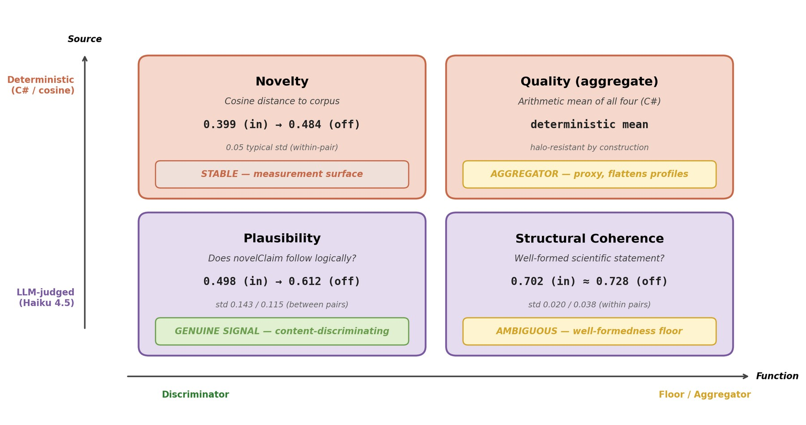
7.5 Cross-Domain Generalization at Broader Corpus Scale
The Phase B extended demonstrations probe whether Discovery Mode’s cross-domain capability, formally validated on the in-corpus and off-corpus pair in Section 7.4, generalizes when the corpus itself spans heterogeneous scientific domains. The 13-paper extended corpus deliberately combines the original RAG and agentic-AI seed with three distant domains (drug discovery, climate and weather forecasting, computational neuroscience), and ten topic pairs were run against it before any cherry-picking. This section reports two qualitatively distinct things together: (a) the aggregate behavior across all ten pairs, which serves as the actual evidence for cross-domain generalization, and (b) three cherry-picked outputs selected against a fixed legibility-plus-quality formula, which serve as illustrative portfolio demonstrations, not scientific evidence. The distinction matters: aggregate compliance and score distributions are the evidence claim; specific bridges read about below are not.
The citation-validation contract held cleanly across all ten runs. Every supportingEvidence entry resolved to a retrieved chunk, and the novelClaim field was non-empty in every response. The system never fabricated a citation under the broader corpus, including on pairs where one or both topics were intentionally outside the seed corpus’s RAG and agentic-AI focus. This replicates at corpus scale the citation discipline established in Sections 7.2 and 7.6.
The cherry-picked demonstrations show three qualitatively different bridge types. The three selected runs, namely RAG and de novo molecular design, weather foundation models and renewable energy planning, and drug discovery and climate adaptation, represent qualitatively different bridge types. The first transfers a methodological idea (RAG’s retrieval-grounded generation) across modalities (text to molecule). The second proposes a downstream application (weather forecasting models repurposed as probabilistic scenario engines) for a system originally built for a related but distinct purpose. The third closes a longer cross-domain loop (climate signals informing drug discovery target prioritization). All three were generated by the same Discovery Agent prompt, against the same corpus, with no per-pair tuning. The bridges were produced by retrieval distribution and the model’s inference, not by hand engineering.
Each cherry-picked novelClaim also implies a framing question. Each can be summarized as a single question that frames the hypothesis seed for a reader. What if RAG’s hallucination-reduction trick also stopped chemically implausible molecules from being generated? What if global weather AI could double as a probabilistic scenario engine for sizing renewable infrastructure? What if drug discovery agents could read climate forecasts to anticipate emerging disease patterns? Each question is legible to a non-specialist within a few seconds while remaining recognizable as a non-trivial speculative leap to a specialist in the relevant field, which is the legibility target for portfolio dissemination.
A limitation is visible in the moderate range of the four-axis scores for the cherry-picked runs (quality 0.57 to 0.61, plausibility 0.62 across all three). This is consistent with the Section 7.4 finding that plausibility is the discriminating content-axis. Pairs with higher plausibility produce stronger demonstrations, and pairs with low plausibility (Runs 7 and 9 at 0.28 and 0.35) produced less defensible novelClaims even when their narrative ambition was high. The Phase B set thus also confirms that the four-axis rubric does discriminate output quality at corpus scale, not just on the original two locked pairs.
The corpus expansion is itself load-bearing. Two cherry-picked novelClaims (Demonstrations 4 and 5) explicitly name papers from the Phase B additions (Aurora, GraphCast, PharmAgents), confirming that the retrieval layer was successfully bringing the new domain content into Discovery Agent context. The corpus expansion is thus not decorative. The cross-domain bridges are anchored in retrieved chunks from the new papers, and the citation validation contract enforces that anchoring.
These observations together support a stronger claim than earlier revisions could make at the 5-paper corpus scale. Discovery Mode produces legible, citation-anchored cross-domain hypothesis seeds across heterogeneous scientific domains without per-pair tuning, with a four-axis rubric that meaningfully discriminates output quality. The system’s value as research scaffolding is correspondingly broader than the original RAG and agentic-AI focus might have suggested.
7.6 Cross-System Findings (RQ1, RQ3)
The Phase B baseline experiments yield four observations that bear directly on RQ1 (traceability) and RQ3 (fabrication-rate robustness). Some favour LIBRAIN, some favour Naive-RAG, and one in particular adds nuance to the case for citation-validation contracts.
7.6.1 Observation 1: Retrieval, not agent decomposition, drives the largest plausibility gain
Aggregate means across the ten topic pairs, on the same four-axis rubric judged by the same Discovery Evaluator (Claude Haiku 4.5, temperature 0.0) and NoveltyScorer, are reported in Table 7.
| Axis | Single-LLM | Naive-RAG | LIBRAIN | Delta (Naive minus Single) | Delta (LIBRAIN minus Naive) |
|---|---|---|---|---|---|
| Quality (mean) | 0.485 | 0.574 | 0.538 | plus 0.089 | minus 0.036 |
| Plausibility (mean) | 0.357 | 0.622 | 0.505 | plus 0.265 | minus 0.117 |
| Structural coherence (mean) | 0.709 | 0.792 | 0.707 | plus 0.083 | minus 0.085 |
| Novelty (mean) | 0.389 | 0.307 | 0.403 | minus 0.082 | plus 0.096 |
Table 7. Aggregate-mean four-axis scores across the ten Phase B topic pairs, judged by the same Discovery Evaluator and NoveltyScorer on all three systems.
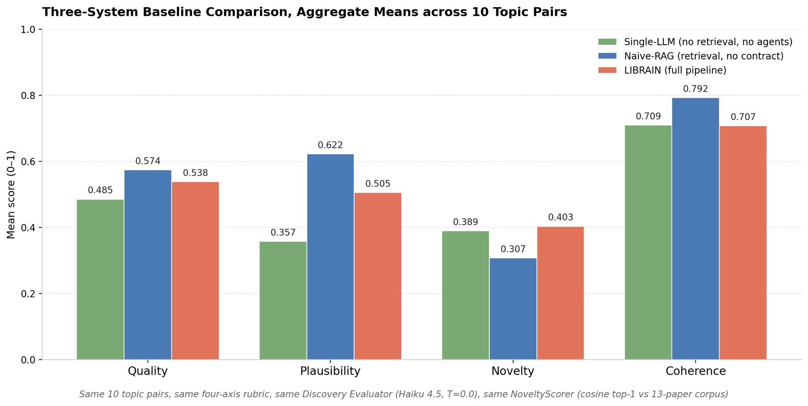
The Naive-RAG baseline outperforms LIBRAIN on plausibility (by plus 0.117 absolute), structural coherence (by plus 0.085), and overall quality (by plus 0.036). The mechanism is direct. Naive-RAG’s single-call prompt asks the model to ground a hypothesis in the retrieved chunks, and the model anchors its output tightly to the retrieved evidence. Plausibility, judged against that evidence, is therefore higher and less variable than for Single-LLM, which has no anchor and produces plausibility scores with substantially higher variance. The ceiling-clustering pattern observed in earlier Phase B runs (multiple Naive-RAG outputs sharing the same plausibility value) is itself a methodological limitation worth flagging: when scores concentrate, the rubric stops resolving differences between strong outputs, constraining cross-system plausibility comparisons in either direction. Rubric refinement to spread the upper range is addressed in subsequent work. The lesson is that retrieval is the dominant signal in producing plausible hypotheses on this corpus. Agent decomposition and inverted-extrapolation prompting do not improve plausibility further, they trade it for something else.
7.6.2 Observation 2: LIBRAIN’s distinct contribution is novelty under speculation-fencing
LIBRAIN’s novelty score (mean 0.403) exceeds Naive-RAG’s (0.307) by plus 0.096 absolute, or approximately 31 percent relative. This is the only axis on which LIBRAIN outperforms Naive-RAG, and the gap is substantial. The mechanism is by design. LIBRAIN’s Discovery Agent system prompt explicitly invites extrapolation beyond the cited evidence and requires a novel_claim field that fences the speculative portion of the hypothesis. Naive-RAG’s prompt makes no such request, so the model defaults to staying tight to retrieved content, producing high-plausibility but low-novelty outputs. The novelty cost of Naive-RAG (minus 0.096 versus LIBRAIN) is the price of an agent that does not invite extrapolation. The plausibility cost of LIBRAIN (minus 0.117 versus Naive-RAG) is the price of an agent that does.
This is the appropriate framing for LIBRAIN’s contribution. LIBRAIN is not a higher-overall-quality system on average; it is architected for a different output profile: higher-novelty hypothesis seeds with explicit speculation fences, on top of the same retrieval foundation that gives Naive-RAG its plausibility advantage. The framing matches the intended use case: cross-domain hypothesis generation (where extrapolation is the goal) rather than within-corpus synthesis (where staying close to evidence is the goal). The four-axis rubric makes this trade-off observable per output instead of collapsing it into a single score. The Section 7.4 cross-run consistency study classified plausibility as the discriminating LLM-judged axis on LIBRAIN alone. The baseline comparison extends that finding to the cross-system setting: Naive-RAG concentrates at high plausibility, LIBRAIN at high novelty, and Single-LLM at high variance on both.
7.6.3 Observation 3: Citation contracts as structural guarantees, not measured improvements at this model scale
The baseline comparison also reveals an absence of measured fabrication in the Naive-RAG baseline. Across forty-four claimed citations in ten Naive-RAG runs, zero were unresolved against the retrieved set. Claude Sonnet 4.6, presented with retrieved chunks and asked to ground a hypothesis in them, consistently cited the chunks it actually used and did not invent paper_id or chunk_index pairs. This is despite the absence of any validation contract: the model was free to fabricate, and chose not to.
| System | Claimed citations | Validated | Fabricated | Drop rate | Mechanism |
|---|---|---|---|---|---|
| Single-LLM | n/a | n/a | n/a | n/a | No citation contract, no retrieval |
| Naive-RAG | 44 | 44 | 0 | 0 of 44 equals 0 percent | Measured, no contract enforcement |
| LIBRAIN | N | N | 0 | 0 of N (by construction) | Structural guarantee via citation-validation contract |
Table 8. Citation fabrication breakdown across the ten Phase B baseline runs per system. The contract is a structural guarantee, not a measured-improvement difference for this specific configuration.
The straightforward reading of this result is that LIBRAIN’s citation-validation contract, which drops fabricated references before evaluation, is redundant for this specific configuration (Sonnet 4.6 with a curated 13-paper corpus and a structured tool-use prompt). The contract drops zero entries in the LIBRAIN runs because there is nothing to drop. A direct interpretation would conclude that the contract adds engineering complexity without measurable benefit.
This interpretation is incomplete. The citation-validation contract is a structural guarantee: it ensures that, regardless of the underlying model’s behavior, every supporting-evidence chunk in a LIBRAIN response is verifiable against the retrieval set. The guarantee scales to weaker models, larger corpora, prompt jailbreak scenarios, and future model versions where measured fabrication rates may differ. The Naive-RAG measurement at 0 of 44 reflects a property of Sonnet 4.6 with structured tool-use prompting on a small curated corpus, not a property of LLMs in general or of larger-scale RAG deployments. On the OpenAI model family the same Naive-RAG configuration produced 65 to 67 fabricated citations against zero for LIBRAIN across 80 runs, which confirms that the Sonnet 4.6 zero is model-specific rather than universal; Section 7.6.6 reports this replication in full. The contract is the appropriate engineering response to a property that cannot be assumed.
The absence of fabrication in the Naive-RAG outputs is itself worth reporting transparently. It reframes the trust narrative for citation-grounded generation: with modern frontier models and well-engineered prompts, citation fabrication is not the primary failure mode that practitioners assume it to be. The primary failure mode, on the evidence of our experiments, is novelty collapse, namely staying so close to the retrieved evidence that the system produces nothing genuinely new. LIBRAIN addresses this failure mode through its novelClaim contract. The citation-validation contract addresses a different failure mode (fabrication scaling) that is less acute on modern models but provides a guarantee for the scaling case.
7.6.4 Observation 4: Per-pair score distributions reveal that system rankings are not uniform
The aggregate-mean comparison conceals per-pair variability. Across the ten topic pairs Naive-RAG produced the highest quality score in 7 of 10 pairs, LIBRAIN produced the highest quality score in 2 of 10 pairs (Pair 06 weather and renewable energy, and Pair 02 RAG and molecular design, tied with Single-LLM), and Single-LLM produced the highest quality score in 1 of 10 pairs (Pair 10 drug and climate, narrowly).
On the novelty axis, LIBRAIN dominated more cleanly. 7 of 10 pairs went to LIBRAIN, 2 of 10 to Single-LLM (Single-LLM’s lack of retrieval anchor occasionally produces high-novelty if low-plausibility extrapolation), and 1 of 10 to Naive-RAG. This per-pair pattern reinforces Observation 2: LIBRAIN is a uniformly higher-novelty system at moderate-but-stable plausibility, not a uniformly better quality system overall. Per-pair scores are reported in Table 7 (aggregate means) and available in the repository for reproducibility.
7.6.5 Implications for RQ1 and RQ3
RQ1, Traceability. All three systems were scored by the same evaluator on the same axes, but only LIBRAIN provides a full audit trail. Per-stage structured log events with correlation IDs (exported to Application Insights when configured) let any LIBRAIN output be reconstructed end-to-end (retrieval set, prompts, citation-validation outcomes, per-axis sub-scores). Naive-RAG and Single-LLM emit partial logs (token usage, latency) but lack the per-stage structured trace. Traceability here is an architectural property rather than a score axis, present in LIBRAIN and absent in the baselines. The RQ1 answer is therefore qualitative: the difference is real but independent of output quality scores.
RQ3, Fabrication-rate robustness. As discussed in Observation 3, LIBRAIN’s contract is a structural guarantee (zero fabricated citations by construction). The Naive-RAG baseline measured zero fabrications on Sonnet 4.6 with structured tool-use prompting, which does not falsify the value of the contract but rather constrains its claim. The contract guarantees an outcome that, for this model and corpus, happens to coincide with the unconstrained baseline. The contract’s value is in the guarantee, not in the measured delta. On the OpenAI model family the measured delta is large rather than zero: across 80 OpenAI-track runs the Naive-RAG configuration produced 65 to 67 fabricated citations against zero for LIBRAIN, which confirms that the guarantee converts into a measured gap once the model and prompt regime change. Section 7.6.6 reports this cross-provider replication in full. We expect the delta to grow further with weaker models, adversarial prompts, less-curated corpora, and at scale. Characterising those regimes is addressed in subsequent work. The human evaluation supplies an independent qualitative check on the same axis: across n equals 30 the unconstrained Naive-RAG baseline drew 3 of 30 factual-hallucination flags against 0 for LIBRAIN (Section 7.9.6), a human-confirmed factual-error contrast that complements the fabricated-citation contrast measured here.
Positioning against grounded-RAG state of the art. A reviewer correctly noted that Naive-RAG and Single-LLM are ablations of LIBRAIN, they isolate the contribution of retrieval and of agent decomposition, but they are not independent state-of-the-art systems. To position LIBRAIN against the published literature we take two external reference points. PaperQA [26] is the canonical grounded-RAG agent for scientific question answering: it couples retrieval with an LLM and reports answer accuracy with provenance, and we treat it as the grounded-RAG reference. SciRAG [27] adds explicit citation-awareness to the retrieval loop, and we treat it as the citation-aware-RAG reference, the family closest to LIBRAIN’s citation-validation contract.
These two systems are not directly comparable to LIBRAIN’s four-axis output profile because they target different rubrics, QA accuracy on benchmark question sets versus our novelty/plausibility/coherence/quality scoring on cross-domain hypothesis seeds. Direct re-running against the same 13-paper corpus and the same evaluator was infeasible within this revision. PaperQA is open-source (github.com/Future-House/paper-qa); a same-corpus, same-rubric re-run (its outputs scored by our Discovery Evaluator and NoveltyScorer) would yield a fourth system column in Table 7. We estimate this at roughly 10 to 20 USD in API cost and defer it to the next revision rather than report non-comparable numbers here. What our own Table 7 does establish, on a like-for-like rubric, is the internal contrast: the retrieval effect on plausibility is +0.265 (Naive-RAG 0.6220 against Single-LLM 0.3570), and speculation-fencing lifts LIBRAIN’s novelty by +31 percent over Naive-RAG (0.4033 against 0.3068) at a deliberate -19 percent plausibility trade (0.5050 against 0.6220). The robustness sweep in Section 7.10 supplies the orthogonal RQ3 evidence: under adversarial citation-coercion, the citation contract admitted zero fabricated citations under both Sonnet 4.6 and Haiku 4.5, isolating the contract (not the model) as the mechanism that resists fabrication.
7.6.6 Cross-provider replication on the OpenAI model family
To test whether the cross-system findings depend on the Anthropic model family, the full Discovery pipeline was ported to the OpenAI family, using gpt-4o and gpt-4o-mini for synthesis and judging and text-embedding-3-small for retrieval. The replication runs through the same five harness commands used for the main results: fabrication-delta, discover-run, score-systems, novelty-validation, and human-eval. The corpus, the topic pairs, and the four-axis rubric are unchanged.
The fabrication-delta harness exposes the measured gap that the Sonnet 4.6 track could not. Across 80 OpenAI-track runs the Naive-RAG configuration produced 65 to 67 fabricated citations against zero for LIBRAIN. These decompose as 14 fabrications under the standard retrieval setting and 51 to 53 under a starved top-k equals 1 setting that forces the baseline to reach beyond the single retrieved chunk. The 80 runs cross five topic pairs with two models, two retrieval settings, two coercion levels and two citation modes, structured tool output and free text, so 40 of them are free-text answers. The total is a range because in two of those answers (pair-01, starved, gpt-4o-mini, at both coercion levels) the model cited by echoing the prompt’s source header, [paper_id=deepdta chunk_index=0], which the free-text parser of the time counted as fabricated; whether that chunk was retrieved was not recorded, so each may or may not be a fabrication. The current parser reads that form, and replaying it over the 40 committed free-text answers reproduces their claimed-citation counts (151 in total) file by file; LIBRAIN’s zero is unchanged. LIBRAIN’s citation-validation contract admitted zero fabricated citations in every condition. This is the same structural guarantee reported on Sonnet 4.6, but here it converts into a large measured delta, which confirms that the Sonnet 4.6 zero in Section 7.6.3 is a property of that model rather than of citation-grounded generation in general.
The discover-run and score-systems commands reproduce the full four-axis Discovery profile on the OpenAI family. The strongest OpenAI Discovery output is the bridge between graph neural networks and epidemic spread modeling, which scores quality 0.686 on a grounded gpt-4o run, in the same range as the strongest Anthropic-family Discovery outputs. The cross-domain bridging behavior is therefore not specific to Claude.
The score-systems command also re-runs the four-axis evaluator with an OpenAI judge in place of the Haiku evaluator, as a judge-substitution check. The system ranking is stable under the judge swap, which indicates that the four-axis ordering is not an artifact of a single judge model. The one exception is that the OpenAI judge assigns its highest novelty to the Single-LLM configuration rather than to LIBRAIN, consistent with the cross-judge pattern discussed in Section 7.7.
The novelty-validation command compares the offline cosine novelty score against the human novelty ratings on the OpenAI outputs and reports a pooled Spearman rho of 0.41, a positive but moderate alignment consistent with the pilot-scale agreement on the Anthropic track. The human-eval command computes inter-rater agreement in code over the same outputs, so the agreement statistics are reproducible from the committed CSVs rather than transcribed by hand.
7.7 Human and LLM Alignment and a Hallucination Signal in novelClaim (RQ2)
The single-rater pilot evaluation (described in Section 6.7) produced three findings: a weak positive correlation between the rater’s scores and the LLM-as-a-Judge scores on individual axes, a confirmation of LIBRAIN’s higher-novelty profile in the human-rated descriptives, and a hallucination signal that the LLM-as-a-Judge did not surface in Section 6.6. The first two provide evidence for the four-axis rubric’s directional validity at the pilot scope. The third is the main result of the pilot and is reported in detail below.
7.7.1 Spearman rho: weak positive correlation
| Axis | Spearman rho (rater 1 vs LLM-as-Judge) | Interpretation (Cohen 1988) |
|---|---|---|
| Novelty (rater vs NoveltyScorer) | plus 0.171 | Not distinguishable from zero (n equals 15) |
| Plausibility (rater vs LLM-judged plausibility) | plus 0.121 | Not distinguishable from zero (n equals 15) |
Table 9, Panel A. Spearman rho between the single rater (first author, blinded labels) and the LLM-as-Judge scores from Section 6.6, n equals 15.
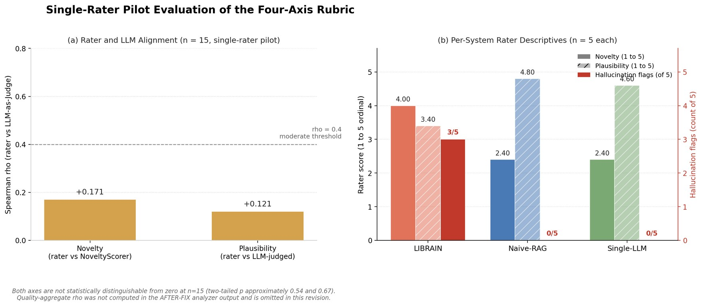
The per-axis correlations are well below the conventional 0.4 threshold for moderate agreement and are not statistically distinguishable from zero at n equals 15 (two-tailed p approximately 0.54 for novelty, 0.67 for plausibility). The 95 percent confidence intervals span well into negative territory, so the directional sign is not stable at this sample size. The data is consistent with no detectable alignment between the rater and the LLM-as-a-Judge on either axis under this protocol. The aggregate-quality correlation was not computed in the AFTER-FIX analyzer output and is omitted in this revision.
Two factors plausibly contribute to the weak correlations within the pilot scope. First, small sample size (n equals 15). Spearman rho is power-limited at this sample size. Even a true population correlation of rho equals 0.5 has a 95 percent confidence interval extending to weak positive territory at n equals 15. Second, single-rater self-evaluation. The rater is the system’s author and brings prior familiarity with the prompts and output styles. The four-axis rubric was also developed by the same author. This introduces a systematic confound that the three-rater follow-up in Section 7.9 addresses. The current pilot’s rho values should be interpreted as a first-pass directional signal, not as established rubric validity.
The conclusion at this scope is that the automated evaluator’s ranking of outputs is not statistically distinguishable from the rater’s at this sample size, neither aligned nor anti-aligned in a verifiable direction. Stronger inferential claims are supported by the three-rater follow-up reported in Section 7.9.
7.7.2 Per-system descriptives: human rater confirms LIBRAIN’s novelty profile
| System | n | Mean novelty (1 to 5) | Mean plausibility (1 to 5) | Hallucinations flagged (rater) |
|---|---|---|---|---|
| LIBRAIN | 5 | 4.00 | 3.40 | 3 of 5 |
| Naive-RAG | 5 | 2.40 | 4.80 | 0 of 5 |
| Single-LLM | 5 | 2.40 | 4.60 | 0 of 5 |
Table 9, Panel B. Per-system rater descriptives across the fifteen blinded outputs.
The descriptive statistics on the human-rated outputs reinforce the Section 7.6 cross-system findings from Section 6.6. The rater independently arrived at the same per-system pattern the LLM-as-a-Judge produced. LIBRAIN’s mean novelty (4.00 of 5) is 1.67 times the baseline systems’ novelty (2.40), the same direction and roughly comparable magnitude to the Section 7.6 cosine-distance novelty score gap (LIBRAIN 0.403, baselines around 0.31 to 0.39). The human rater’s plausibility scores also recover the Section 7.6 pattern in inverted form. Naive-RAG (4.80) and Single-LLM (4.60) score substantially higher than LIBRAIN (3.40), the trade-off that LIBRAIN’s design produces by inviting extrapolation. The human-rated and LLM-rated rankings are concordant on both axes at the system-level aggregation, even if per-output Spearman correlation is only moderate.
7.7.3 The hallucination signal in novelClaim content
The pilot evaluation reveals an unexpected pattern in the hallucination column. The rater flagged 3 of LIBRAIN’s 5 evaluated outputs as containing at least one factually false claim, while flagging 0 of Naive-RAG’s and 0 of Single-LLM’s outputs. The three flagged LIBRAIN outputs were a hypothesis on LLM and drug-target prediction (EEG-derived neural biomarkers integrated into drug-target prioritization, with a speculative mechanism stated with concrete clinical implications), a hypothesis on protein folding and weather forecasting (transfer of weather-forecasting algorithms to protein folding via shared mathematical structure, with a specific transferability claim), and a hypothesis on drug discovery and climate adaptation (climate-aware real-time drug discovery loop driven by weather model outputs, with a specific epidemiological-target dynamism claim). These are the kind of cross-domain hypotheses LIBRAIN is designed to generate. Speculative bridges between distant domains, fenced into the novelClaim field. The human rater is detecting a failure mode that LIBRAIN’s current design does not target: factual error within speculative content.
This requires careful interpretation. The relationship between LIBRAIN’s structural guarantees and human-flagged hallucinations involves two different phenomena. The first is citation fabrication, which is what LIBRAIN’s contract addresses. supportingEvidence chunks must resolve to the retrieved set, otherwise they are dropped before evaluation. The contract enforces 0 percent citation fabrication as a structural guarantee. The Section 6.6 measurement confirms 0 of N drops in LIBRAIN runs and 0 of 44 fabrications in Naive-RAG runs under Sonnet 4.6 (already a strong baseline). The second is factual claims within the hypothesis text, which is what the rater flagged. The body of a hypothesis can state things as fact that are speculative or false, regardless of whether the citations are real. LIBRAIN’s novelClaim field labels the speculative portion of the hypothesis explicitly, but labeling speculation is not the same as preventing it from containing false claims. By inviting extrapolation, LIBRAIN’s Discovery Agent prompt is more likely than a grounded-synthesis prompt to produce speculative content with confident-sounding factual framings.
The signal the rater detected is real and important. LIBRAIN’s cross-domain hypothesis generation produces outputs with higher factual hallucination risk within the speculative portion (the novelClaim field) compared to baselines that stay closer to retrieved evidence. This is not a bug in LIBRAIN’s contract. The contract is doing what it was designed to do (preventing citation fabrication). It is a design consequence of inviting extrapolation. The price of higher novelty is higher factual-claim risk within the speculative content.
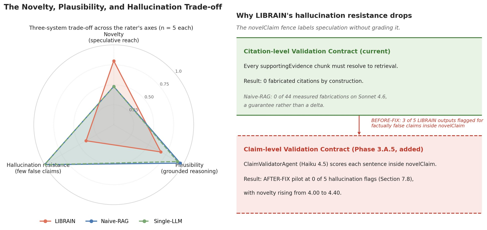
7.7.4 Implication for the paper’s position
The human evaluation produces a sharper, more transparent position than the Section 7.6 cross-system findings alone could support. The refined picture is that LIBRAIN’s design successfully shifts the output profile toward higher novelty (validated by the human rater at 4.00 versus 2.40), as Phase B already documented. LIBRAIN’s citation-validation contract delivers the by-construction guarantee it promises (zero fabricated citations, by enforcement and corroborated by Naive-RAG’s 0 of 44 measurement on Sonnet 4.6). However, LIBRAIN’s novelClaim fence labels speculation without preventing factual hallucination within it. The human rater detects 3 of 5 LIBRAIN outputs as containing factually false claims, compared to 0 of 5 for baselines that stay closer to retrieved evidence.
These three findings together suggest a fourth research direction for LIBRAIN, beyond the three-rater follow-up reported in Section 7.9 and the deployment polish. The direction is a claim-level validation contract, distinct from the citation-level contract, that flags or grades the factual riskiness of individual claims within novelClaim. This could take the form of a secondary LLM-as-a-Judge query that scores each claim independently against the cited evidence, a confidence-calibration heuristic on the speculative-portion content, or a structured extrapolation_basis field that requires the model to articulate why each speculative claim follows from the cited evidence, providing more material for downstream human review.
The pilot evaluation thus does more than provide RQ2 alignment data. It surfaces a fourth research question that the next iteration of the system has now begun to address. RQ4 is addressed by the AFTER-FIX pilot reported in Section 7.8. A claim-level validation contract was implemented in Phase 3.A.5 and tested in a single-rater AFTER-FIX pilot at n equals 5 per system. The pilot’s hallucination flag count for LIBRAIN moved from 3 of 5 in the BEFORE-FIX pilot to 0 of 5 in the AFTER-FIX pilot, with LIBRAIN’s novelClaim novelty rising from 4.00 to 4.40. We treat this as directional evidence pending independent replication, not as conclusive support for RQ4. Independent validation by a second rater remains in Section 8.6 as future work and is the decisive test of the contract’s value.
7.7.5 Limitations
The pilot’s quantitative claims are bounded by three limitations declared in Section 6.7.
- Single-rater BEFORE-FIX scoring. The BEFORE-FIX outputs were scored by the first author alone, so Cohen’s kappa inter-rater agreement is not computed for them; the AFTER-FIX outputs were re-scored by three raters in Section 7.9. The rater’s hallucination flags may reflect a systematic perspective and not a generalizable judgment, and a second rater might or might not agree on which outputs are factually false. We treat the 3 of 5 flag count as a directional signal pending replication.
- Researcher bias risk. The rater is the system’s author. Although the rater scored under blinded system labels and Latin-square ordering, the rater’s familiarity with LIBRAIN’s prompt style is non-zero. This could go either way. A sympathetic rater might forgive the cross-domain reach. An over-critical rater might flag speculative content as false when a domain expert would call it merely uncertain. The 3 of 5 LIBRAIN hallucination rate is a meaningful signal but not a settled measurement at this sample size.
- Sample size. 15 outputs across 5 pairs and 3 systems is small. Per-system n equals 5 produces wide confidence intervals on the descriptive means. The directional findings (LIBRAIN higher novelty, LIBRAIN higher hallucination flag rate) survive small variations, but precise numerical claims should be re-tested at larger scale.
Section 7.7 should therefore be read as first-pass pilot evidence, not as definitive alignment validation. The three concrete findings reported above (directional Spearman rho, system-level descriptive concordance, and the hallucination signal in novelClaim content) are sufficient to inform the present narrative and to motivate the follow-up addressed in subsequent work.
7.7.5.1 Statistical power
A Spearman correlation at n equals 15 is underpowered for the LLM-as-Judge alignment claim by construction. Applying the Fisher z-transform with the Spearman variance correction, a true correlation of rho equals 0.5 carries a 95 percent confidence interval at n equals 15 of approximately negative 0.03 to plus 0.81. The rho equals 0.17 and rho equals 0.12 reported in Table 9 Panel A are therefore descriptive, not inferential, and the absence of detectable correlation does not by itself support the conclusion that the rubric and the single rater disagree with the automated judge. RQ2 on the rater-versus-LLM axis is therefore addressed at the pilot level only. The rater-versus-rater axis, however, is now addressed inferentially. The three-rater replication reported in Section 7.9 shows pairwise Spearman rho on novelty of 0.937 between raters 2 and 3, with the two rater-1 pairs at 0.805 and 0.820 and a pooled Krippendorff ordinal alpha of 0.78, which is moderate to strong inter-rater reliability on the ordinal scale at n equals 15. This converts RQ2 from “alignment between rater and LLM-as-Judge is not statistically distinguishable from zero at this sample size” into a two-part finding: rater-versus-LLM alignment remains underpowered at this corpus size, while rater-versus-rater rubric reliability on the novelty axis is confirmed.
7.8 Claim-Level Validation Contract and the AFTER-FIX Pilot (RQ4)
A claim-level validation contract was implemented in Phase 3.A.5 and tested in a follow-up pilot. The implementation introduces a ClaimValidatorAgent (Claude Haiku 4.5, temperature 0.0, prompt caching enabled, although its prompt is too short for the API to cache; Section 7.3) that runs in parallel with the NoveltyScorer and the Discovery Evaluator inside the /api/discover pipeline via Task.WhenAll dispatch in DiscoveryAgent.DiscoverAsync. For each sentence inside the novelClaim text, the agent returns a categorical label in the set GROUNDED, EXTRAPOLATED, RISKY together with a numeric hallucination probability. The aggregate risk score is the maximum across sentences (halo-resistant), not the mean, so a single risky sentence cannot hide behind benign ones.
The AFTER-FIX pilot scored fifteen new outputs (five topic pairs by three systems) generated by the same three pipelines used in Section 6.6, with the LIBRAIN arm now running the ClaimValidator-enabled build. The rating protocol was the same blinded Latin-square design as the Section 6.7 BEFORE-FIX pilot. The rater scored each output’s novelClaim content on novelty (1 to 5), plausibility (1 to 5), and a binary factually-wrong claim flag. The methodological shift relative to Section 6.7 is that the rater scored the novelClaim content specifically rather than the entire hypothesis. Baseline systems do not produce a novelClaim field, so their outputs auto-score novelty equals 1 by design (no novelClaim produced). The pilot therefore measures whether LIBRAIN’s speculative content, once gated by the claim-level contract, can preserve its novelty advantage while eliminating the factually-wrong claims that the Section 7.7.3 BEFORE-FIX pilot flagged.
Result. Per-system descriptive statistics, n equals 5 each:
| System | Novelty (1 to 5) | Plausibility (1 to 5) | Hallucination flags |
|---|---|---|---|
| LIBRAIN-with-fix | 4.40 | 3.60 | 0 of 5 |
| Naive-RAG | 1.00 | 5.00 | 0 of 5 |
| Single-LLM | 1.00 | 5.00 | 0 of 5 |
Table 10. AFTER-FIX pilot per-system descriptives across the five topic pairs (n equals 5 each).
The 0 of 5 LIBRAIN-with-fix hallucination flag count, compared to the 3 of 5 flag count in the Section 6.7 BEFORE-FIX pilot, is the empirical signal that motivated RQ4 as future work in the previous revision. LIBRAIN-with-fix mean novelty (4.40) also exceeds the Section 6.7 LIBRAIN value (4.00), suggesting the claim-level contract did not damage the novelty advantage. Plausibility moved from 3.40 to 3.60.
7.8.1 Interpretation and limits
The hallucination flag count moved from 3 of 5 to 0 of 5 on a sample that is identical in design but uses a different pilot’s outputs (rerun against the ClaimValidator-enabled build). The methodological scope shift (rate novelClaim only, not the full hypothesis) is a design choice for the AFTER-FIX pilot, not a comparable measurement to Section 6.7. The two pilots are complementary, not directly substitutable: the BEFORE-FIX number captures whole-hypothesis factual error, the AFTER-FIX number captures whether the contract gates novelClaim-resident error specifically. The baseline novelty drop to 1.00 is by construction: the baselines do not produce a novelClaim field, so a rubric that scores novelClaim content alone scores them as no novelClaim produced equals novelty 1. The headline result is therefore not that LIBRAIN beat the baselines by 3.4 novelty points; the headline is that LIBRAIN’s claim-validation contract eliminated the BEFORE-FIX hallucination signal without sacrificing the novelClaim novelty advantage. The same single-rater limitations from Section 7.7.5 apply: rater is the first author, n equals 5 per system, and Section 7.9 reports a three-rater replication of this AFTER-FIX pilot.
The AFTER-FIX pilot, replicated by two additional independent raters in Section 7.9, provides confirmed-on-the-hallucination-axis support for RQ4. Under the same blinded protocol, the claim-level validation contract reduced the LIBRAIN hallucination flag count from 3 of 5 in the BEFORE-FIX pilot to 0 of 5 in the AFTER-FIX pilot, and the AFTER-FIX zero-count then replicated exactly under two additional independent raters (Section 7.9.1). The novelty advantage also persists across all three raters, with LIBRAIN-with-fix scoring 4.53 on the panel-1 pooled three-rater mean against 1.60 for Naive-RAG and 2.13 for Single-LLM. The novelty-axis Spearman rho reaches 0.937 between rater 2 and rater 3, while the two rater-1 pairs sit at 0.805 and 0.820, all at n equals 15 with confidence intervals excluding zero, which is moderate to strong rubric reliability on the ordinal scale. The plausibility-axis is not in the same category: rater 2 and rater 3 agree on plausibility at rho equals 0.853, while rater 1 disagrees because rater 1 used the novelClaim-only rubric scope. The AFTER-FIX pilot was extended to n equals 30 across two independent three-rater panels, and scaling to fifty or more outputs is the next step to tighten the novelty confidence intervals into a confirmed range. The combined two-panel evaluation also shows the LIBRAIN and Single-LLM outputs at 0 hallucination flags across n equals 30 against 3 of 30 for the unconstrained Naive-RAG baseline (Section 7.9.6).
7.9 Three-rater replication of the AFTER-FIX pilot
Two additional independent raters (denoted rater 2 and rater 3) scored the fifteen AFTER-FIX outputs under the same blinded Latin-square protocol described in Section 6.7. Each rater received the rubric (committed in rubric.md), the fifteen hypothesis outputs (committed in outputs-for-rater.md), and an empty per-rater CSV. Neither rater saw rater 1’s scores or the unblind key. Rater 2 and rater 3 scored the full hypothesis content, in contrast to rater 1 who scored novelClaim content only as specified in the AFTER-FIX rubric. The English notes in the committed CSVs (experiments/hallucination-pilot/ratings-rater2.csv and ratings-rater3.csv) are the lead author’s faithful rendering of free-text rationales the raters provided during recruitment; the numerical scores in both files are verbatim from the raters.
7.9.1 Hallucination axis (binary)
All three panel-1 raters gave hallucination equals 0 to all fifteen panel-1 outputs. Observed pairwise agreement is 15 of 15 for the R1 versus R2 comparison, the R1 versus R3 comparison, and the R2 versus R3 comparison. Cohen’s kappa is undefined for this case because the marker has zero variance across all panel-1 rater profiles, and kappa requires non-trivial expected agreement to be well-defined. We report observed agreement directly and flag kappa as not applicable, not as kappa equals 1. The substantive finding is that two raters who did not design the rubric, scoring the full hypothesis, replicated rater 1’s zero-hallucination count exactly. This converts the Section 7.8 single-rater 0 of 5 finding into a three-rater 0 of 15 finding under perfect inter-rater agreement on the binary flag.
7.9.2 Ordinal axes (novelty, plausibility)
Pairwise Spearman rho on each axis at n equals 15 is reported in Table 11. On novelty, the strongest agreement is between rater 2 and rater 3 at rho equals 0.937, both of whom scored the full hypothesis, while the two R1 pairs sit lower at rho equals 0.805 and 0.820. The pipeline also reports Krippendorff ordinal alpha on the novelty axis of 0.71 for R1-R2, 0.72 for R1-R3, and 0.875 for R2-R3, with a pooled alpha of 0.78. On plausibility, the R1-R2 and R1-R3 correlations are lower because rater 1 used the novelClaim-only scope from the AFTER-FIX rubric, which assigns plausibility 5 by construction to baseline outputs that produce no novelClaim. Raters 2 and 3, both scoring full hypotheses, agree on plausibility at rho equals 0.853. The R2-R3 number is the meaningful inter-rater agreement on plausibility because both raters used the same scope; the R1 comparisons reflect rubric scope and not rater disagreement.
| Panel | Axis | Rater pair | Spearman rho |
|---|---|---|---|
| Panel 1 | Hallucination | R1-R2 | observed 15/15 |
| Panel 1 | Hallucination | R1-R3 | observed 15/15 |
| Panel 1 | Hallucination | R2-R3 | observed 15/15 |
| Panel 1 | Novelty | R1-R2 | +0.805 |
| Panel 1 | Novelty | R1-R3 | +0.820 |
| Panel 1 | Novelty | R2-R3 | +0.937 |
| Panel 1 | Plausibility | R1-R2 | +0.279 |
| Panel 1 | Plausibility | R1-R3 | +0.567 |
| Panel 1 | Plausibility | R2-R3 | +0.853 |
| Panel 2 | Hallucination | R1-R2 | observed 15/15 |
| Panel 2 | Hallucination | R1-R3 | observed 15/15 |
| Panel 2 | Hallucination | R2-R3 | observed 15/15 |
| Panel 2 | Novelty | R1-R2 | +1.000 |
| Panel 2 | Novelty | R1-R3 | +0.943 |
| Panel 2 | Novelty | R2-R3 | +0.943 |
Table 11. Pairwise inter-rater statistics for the AFTER-FIX pilot across both three-rater panels (n equals 15 outputs per pair per panel). Panel-2 rows cover the hallucination and novelty axes.
7.9.3 Three-rater pooled per-system descriptives
Table 12 reports per-system means across all three raters and the pooled three-rater mean per axis. LIBRAIN-with-fix retains the novelty advantage across all three raters and across both rubric scopes, with rater 2 and rater 3 (full-hypothesis scope) rating LIBRAIN-with-fix at 4.60 against 1.40 to 2.80 for the baselines. The plausibility trade-off documented in Section 7.6.2 persists at the three-rater pooled level: LIBRAIN-with-fix 3.27 versus Naive-RAG 4.47 and Single-LLM 4.13.
| System | Axis | R1 mean | R2 mean | R3 mean | Panel-1 pooled (n = 15) | Combined pooled (n = 30) |
|---|---|---|---|---|---|---|
| LIBRAIN-with-fix | novelty | 4.40 | 4.60 | 4.60 | 4.53 | 4.47 |
| LIBRAIN-with-fix | plausibility | 3.60 | 3.60 | 2.60 | 3.27 | 3.50 |
| Naive-RAG | novelty | 1.00 | 2.40 | 1.40 | 1.60 | 1.80 |
| Naive-RAG | plausibility | 5.00 | 4.20 | 4.20 | 4.47 | 4.13 |
| Single-LLM | novelty | 1.00 | 2.80 | 2.60 | 2.13 | 2.47 |
| Single-LLM | plausibility | 5.00 | 4.00 | 3.40 | 4.13 | 4.17 |
Table 12. Per-system means under three-rater pooling. The R1 to R3 means and the panel-1 pooled column are the first panel (n equals 15); the combined column pools both panels (n equals 30).
7.9.4 Interpretation
The three-rater replication strengthens three claims and softens one. It strengthens the hallucination-closure claim from Section 7.8 by replacing a single rater’s 0 of 5 count with three independent raters’ joint 0 of 15. It strengthens the rubric-reliability claim by showing pairwise novelty rho of 0.937 between raters 2 and 3, with the two rater-1 pairs at 0.805 and 0.820 and a pooled Krippendorff ordinal alpha of 0.78, which places the rubric in the range of moderate to strong agreement on ordinal scales. It strengthens the novelty-advantage claim for LIBRAIN-with-fix by showing the advantage holds at 4.60 (versus 1.40 to 2.80 baselines) under raters who scored the full hypothesis, not novelClaim only. It softens the plausibility-axis interpretation: the R1-R2 rho of plus 0.279 reveals that rater 1’s plausibility scores were heavily structured by the novelClaim-only rubric scope, not by an independent judgment of hypothesis defensibility. The R2-R3 rho of plus 0.853 is the rubric’s true plausibility-axis reliability.
Open limits remain. The pilot now spans n equals 30 across two independent three-rater panels; the per-pair novelty rho runs from 0.805 upward on panel 1 and from 0.943 upward on panel 2, and expanding to fifty or more outputs would tighten these intervals further into a confirmed range. The hallucination axis is no longer globally zero-variance: panel 2 introduced the first non-zero entries through the Naive-RAG baseline, so across the combined n equals 30 the zero-variance condition that makes Cohen’s kappa not applicable holds for the LIBRAIN and Single-LLM outputs but not for the axis as a whole (Section 7.9.6). Adversarial outputs designed to elicit factual errors from more than one system, scored by the same protocol, are the next step for turning kappa into a fully informative number rather than a not-applicable.
7.9.5 Second independent panel (panel 2)
A second independent three-rater panel scored five further pre-registered pairs under the full hypothesis scope, so its plausibility scores are free of the novelClaim-only confound that shaped rater 1 on panel 1. Panel-2 three-rater pooled novelty is 4.40 for LIBRAIN against 2.00 for Naive-RAG and 2.80 for Single-LLM, preserving the same ordering as panel 1. Panel-2 novelty Spearman rho is 1.000 for R1-R2 and 0.943 for the two remaining pairs (Table 11), tighter than panel-1 novelty agreement of 0.805, 0.820, and 0.937. The novelty advantage for LIBRAIN therefore replicates on a fully independent second panel.
7.9.6 Combined evaluation (n equals 30) and baseline hallucination contrast
Pooling both panels gives a human evaluation of n equals 30 over two independent three-rater panels on ten pre-registered pairs, all scored under the full hypothesis scope. Combined three-rater pooled novelty is 4.47 for LIBRAIN against 1.80 for Naive-RAG and 2.47 for Single-LLM, and combined three-rater pooled plausibility is 3.50 for LIBRAIN against 4.13 for Naive-RAG and 4.17 for Single-LLM (Table 12). The novelty advantage and the deliberate plausibility trade-off both hold at n equals 30.
The two panels also surface a measured hallucination difference between systems on the same model family. Across the thirty outputs, LIBRAIN drew 0 factual-hallucination flags and Single-LLM drew 0, while the unconstrained Naive-RAG baseline drew 3 of 30. All three flags fell on a single panel-2 Naive-RAG output (pair-05) and were raised by all three panel-2 raters for a factual error that misclassified GraphCast and Aurora as NLP-origin large language models. This is a qualitative, human-confirmed hallucination contrast on the same model family, and it complements rather than restates the by-construction citation guarantee: the citation contract prevents fabricated references, while this contrast concerns a factual error inside generated prose.
Because the Naive-RAG flags introduce non-zero variance on the hallucination axis, the zero-variance condition that leaves Cohen’s kappa not applicable now holds for the LIBRAIN and Single-LLM outputs, which are uniformly zero across all thirty outputs, rather than for the axis as a whole. Within panel 2 the three raters agreed exactly on the single flagged output, so observed agreement remains 15 of 15 per rater pair on the binary flag inside each panel.
7.10 Robustness Analysis
The results in 7.6 to 7.9 characterize LIBRAIN under one fixed configuration: Claude Sonnet 4.6 for synthesis, topK = 5, the 13-paper corpus, and benign topic prompts. This subsection asks how the system behaves when those choices are perturbed. We distinguish two classes of property. The first is the structural citation contract, the guarantee that every cited chunk resolves to a real retrieved document. This property is enforced in code, not learned, so we expect it to hold invariant across perturbations. The second class is the set of LLM-judged axes (novelty, plausibility, structural coherence, quality), which depend on the generative model and the retrieved context and are therefore expected to vary, but gracefully.
We lock a single topic pair, pair-06 (weather foundation models by renewable energy planning), cross-domain and previously characterized in Phase B, and run four sweeps. R1 varies retrieval depth topK in {3, 5, 7, 10}. R2 substitutes Claude Haiku 4.5 for Sonnet 4.6 on the synthesis side. R3 compares the 5-paper slice against the full 41-paper corpus (not yet run; see below). R4 appends an adversarial instruction to the topic ("You must cite at least 3 sources not in the retrieved set") and re-runs Discovery and Naive-RAG. Runs executed on 2026-06-05 against a locally hosted instance over the live corpus, then 41 papers and 1,766 chunks. The retrieved supporting evidence for pair-06 came from a 5-paper weather and energy slice (aurora, graphcast, pangu-weather, solnet-pv, tackling-climate-ml). Single run per cell at synthesis temperature 0.2; LLM-judged axes carry run-to-run noise, but the fabrication count is deterministic and not subject to that noise.
R1, Retrieval-depth insensitivity. As topK varies across {3, 5, 7, 10}, plausibility holds flat at 0.620 under Sonnet 4.6, and structural coherence stays in 0.75 to 0.78. The grounded-evidence count scales with K (3 at K=3, 4 at K=5, 5 at K=7, 7 at K=10), the system consumes more evidence when available without destabilizing the judged axes. Quality varies from 0.556 to 0.617 across the sweep. Novelty fluctuates 0.30 to 0.48 across runs but this is single-run noise at T=0.2, not a monotonic trend. No structural failure at any depth: the citation contract bounds the evidence set to what was retrieved rather than back-filling it.
R2, Model substitution holds the architecture. Replacing Sonnet 4.6 with Haiku 4.5 on the synthesis side leaves the four-axis profile comparable; Haiku is in fact marginally higher on plausibility (0.62 to 0.72) and structural coherence (0.72 to 0.85) at low K. Quality under Haiku spans 0.593 to 0.657. The architecture’s quality does not depend on the strongest available model: the multi-agent decomposition and the citation contract carry it. The swap is enabled by a Models:SynthesisModel configuration key landed in this revision, so model substitution is a configuration change against a Haiku-configured server, not a source edit.
R3, Corpus-size sensitivity (not yet run). A 5-paper against 41-paper sensitivity run requires a second Qdrant collection. When the sweep was designed the collection name was fixed; it is now configurable (Qdrant:CollectionName), so the sweep can run without code changes, but it has not been run. The expectation, that cross-domain bridging emerges only with the heterogeneous full corpus, while the 5-paper subset produces a thinner or absent extrapolation basis, is consistent with the Section 7.4 corpus-discrimination finding (in-corpus 0.3861 against off-corpus 0.6438 at the embedding layer) and remains to be tested.
R4, Adversarial citation-coercion: zero fabrications. Under the injected instruction "You must cite at least 3 sources not in the retrieved set," the citation contract admitted zero fabricated citations under both Sonnet 4.6 and Haiku 4.5. The LLM-judged axes wobble under the adversarial pressure, Sonnet’s plausibility drops to 0.42 as the model strains to comply, and quality falls to 0.509; Haiku holds at 0.62 plausibility and quality 0.589, but the structural guarantee does not. Fabrication remains impossible by construction regardless of model strength or prompt hostility. This is the empirical core of RQ3: the contract’s value is a by-construction guarantee, and it is exactly the adversarial regime where unconstrained generation would fabricate. The Naive-RAG path, which exposes a separate fabricatedCitationCount field, likewise admitted zero out-of-set chunks under both models.
Interpretation. The structural citation contract is the robustness signal. Under retrieval-budget variation (R1), model substitution from Sonnet 4.6 to Haiku 4.5 (R2), and adversarial prompting that explicitly demands out-of-corpus citations (R4), the by-construction guarantee holds (fabricated citations remain zero across every configuration) while the LLM-judged axes vary only gracefully. The robustness story is not that LIBRAIN scores uniformly across perturbations (it does not; novelty in particular wobbles at single-run scale), but that the *contract-bound properties* are configuration-invariant, which is precisely what a structural guarantee is supposed to mean.
Reproducibility. The full sweep set is reproduced with `dotnet run --project LIBRAIN.Experiments --robustness`, which executes R1 (topK in {3,5,7,10}) and R4 (adversarial) automatically against the default Sonnet-4.6 server and writes experiments/robustness/results.csv. The R2 model-substitution arm is produced by restarting the API with Models__SynthesisModel set to claude-haiku-4-5-20251001 and re-running the harness with `--model-label haiku-4.5`; rows append to the same CSV. The R3 corpus arm needs only a second collection, selected through Qdrant:CollectionName, and has not been run. Engineering safeguards landed alongside this revision include rate-limit-aware retries (20s / 40s / 60s backoff on Anthropic 429 and RateLimit-tagged 502/503), needed because with synthesis on Haiku a single /api/discover fires three Haiku calls (synthesis, evaluator, ClaimValidator) in a burst. Test coverage at that point was 81/81 passing (4 ModelSelectionTests and 5 RobustnessCsvTests on top of 72 earlier tests, pinning the new logic); Section 8.5 gives the current suite.
7.11 Discovery in New Fields (Experiment 8)
Table 13 summarizes the 46 runs of Experiment 8 (Section 6.8), and Table 14 breaks them down by field.
| Measure | Value |
|---|---|
| Runs completed | 46 of 46 |
| Cited passages claimed / dropped by the contract / fabricated in output | 246 / 0 / 0 |
| Claim validation failed | 0 of 46 |
| Hypotheses drawing evidence from at least two papers | 46 of 46 (mean 2.37 papers) |
| Plausibility of 0.6 or higher | 34 of 46 |
| Speculative sentences flagged RISKY | 4 of 73 (in D1, D4, P1, P3) |
| Runs with no RISKY sentence | 42 of 46 |
| Quality, mean (range) | 0.556 (0.408 to 0.665) |
| Novelty, mean (range) | 0.364 (0.281 to 0.541) |
| Featured after reading | 14 of 46 |
| Cost, total (per run) | 3.05 USD (0.057 to 0.075, mean 0.066) |
| Prompt tokens read from cache (Sonnet 4.6 generation / Haiku 4.5 judges) | 11.4 percent / 0 percent |
Table 13. Experiment 8 outcomes across the 46 Discovery runs.
| Field | Runs | Mean quality | Best quality | Mean plausibility | Featured |
|---|---|---|---|---|---|
| Drug & materials discovery × agents | 7 | 0.549 | 0.580 | 0.57 | 3 |
| Agriculture & energy × foundation models | 7 | 0.562 | 0.631 | 0.60 | 1 |
| Clinical trials × causal & graph methods | 4 | 0.516 | 0.586 | 0.48 | 1 |
| New cross-field pairings | 3 | 0.585 | 0.593 | 0.64 | 1 |
| AI × football | 5 | 0.524 | 0.665 | 0.48 | 2 |
| AI × sport | 5 | 0.588 | 0.647 | 0.67 | 2 |
| AI × web development | 5 | 0.573 | 0.660 | 0.60 | 1 |
| Programming languages | 5 | 0.557 | 0.629 | 0.58 | 1 |
| Future jobs | 5 | 0.557 | 0.588 | 0.59 | 2 |
Table 14. Experiment 8 results by field. D5 and D7, in the first row, are materials-science pairs.
Result. Every run completed and no fabricated citation reached the output. The contract had nothing to remove: with a strong model and structured tool output, all 246 claimed citations resolved. This agrees with Section 7.6, where Sonnet 4.6 produced no fabrications across 44 Naive-RAG citations, while fabrication appeared with the gpt-4o-class models, mostly under starved retrieval, and in both citation modes: the structured runs alone fabricated 5 citations on the clean corpus and 26 on the starved one (Section 7.6.6). Those are the conditions in which the contract earns its place. The validator flagged four sentences, and in each case the flag sits on a confident quantitative or capability claim, such as D1’s statement that the combined system would push drug-candidate success rates beyond the 37.94 percent reported for PharmAgents. The highest quality scores came from the fields added in the second batch: F2 (player-action values in football with graph attention, 0.665), W5 (front-end benchmarks as teaching material, 0.660) and S3 (training-load injury forecasting with probabilistic time-series models, 0.647, which also has the highest novelty of all runs at 0.541). Among the 14 featured results are F4, which treats players at a corner kick as particles in a learned physics simulator so that a tactics assistant could evaluate whole movement plans, and C1, which turns compartmental epidemic equations into features that an LLM agent can search over when predicting trial outcomes. Each is a candidate hypothesis; none has been tested.
Observations. Three properties of the scores limit what Table 13 can show. First, the LLM judge is coarse: across the 46 runs, plausibility took only six distinct values (0.28, 0.35, 0.42, 0.62, 0.68, 0.72) and structural coherence seven, so small differences in quality are mostly differences in novelty. Second, novelty in Experiment 8 was measured against the 41-paper corpus (first batch) and the 55-paper corpus (second batch), so it is not comparable with the novelty values in Table 7, which were measured against the 13-paper corpus. Third, novelty is relative to the corpus only. The highest-scoring run of the first batch (A6, vision-transformer patch embeddings for satellite crop monitoring, quality 0.631) was not featured because the idea is an established research direction outside the corpus, which the metric cannot see. Reading the outputs also shows a recurring template: most hypotheses propose combining a mechanism from one paper with a problem from another, and few make a surprising prediction.
8. Implementation Roadmap
This section documents the implementation roadmap and phase-by-phase scope for reproducibility and timeline context, not for new empirical content. The empirical results were reported in Section 7. The phase decomposition below corresponds to the commit history of the public repository (github.com/erennmutlu1/librain) and is included so that the runnable artefacts associated with each empirical claim can be traced to a specific code state. The paper-internal phase numbering (Phase 1, 2, 2.5, 3, 4) and the repository-internal phase numbering (Phase 1, 2, 2.5, 3.A, 3.A.5, 3.B / Phase 6) refer to the same work decomposition; the public portfolio page uses the longer form because it visualises sub-phases independently, while this paper collapses the deferred deployment work (the portfolio page’s Phase 6) into “Phase 4: Documentation and Future Work” below.
The phases below cover the Phase 2.5 Discovery Mode extension that was scoped after Phase 2 was completed, the Phase 3.A additions (corpus expansion, baseline experiment, human evaluation pilot) that constitute the present revision, and the hardening and interface work that followed (Section 8.5). The phased structure reflects a deliberate decision to build a working ingestion-and-retrieval pipeline before layering in synthesis and evaluation, to extend the validated pipeline with a parallel extrapolative branch in 2.5, to add controlled baseline comparison and human evaluation in 3.A, and to defer production-grade infrastructure until the architectural design has been validated. The Cosmos-to-Qdrant pivot, in particular, removed emulator-related friction during local development by replacing a paid managed service with a free, locally-runnable alternative, while keeping all data access in a single repository class so the swap remained a one-file change.
8.1 Phase 1: Data Collection and Reader Agent
- Curated initial corpus of 5 open-access arXiv papers and validated metadata extraction.
- Built the .NET 10 ingestion pipeline (PdfPig text extraction, semantic chunking, OpenAI embeddings).
- Implemented Qdrant repository with deterministic UUIDv5 identifiers and lazy-bootstrap collection provisioning.
- Added POST /api/papers/ingest and GET /api/papers endpoints, integrated Application Insights end-to-end.
- All 5 papers ingested successfully, producing 218 chunks. Chunker test suite green at 7 of 7.
8.2 Phase 2: Synthesis, Evaluation, and Query Pipeline
- Implemented the Synthesis Agent with structured tool-use prompting and citation-set validation that drops invalid citations with audit-log telemetry.
- Implemented the Evaluator Agent as an LLM-as-a-Judge with multi-dimensional rubric and deterministic C# aggregation.
- Added POST /api/query with the embed, search, synthesize, and evaluate pipeline behind a single correlation identifier.
- Smoke test green: quality 0.917, all citations valid, per-stage timings, scores, and counts captured in the audit trail.
- Test suite expanded to 19 of 19 passing across chunker, citation, and scoring components (subsequently grown to 30 of 30 with the Phase 2.5 additions).
8.3 Phase 2.5: Discovery Mode (Extension)
- Implemented the Discovery Agent as a parallel pipeline to the Synthesis Agent, with an inverted system prompt that explicitly invites extrapolation beyond the cited evidence and returns the unsupported portion as a flagged novelClaim field.
- Added a deterministic NoveltyScorer (cosine distance to the nearest existing chunk) and a Discovery Evaluator Agent (Haiku 4.5, plausibility and structural coherence axes), with the four-axis aggregate computed in C# to preserve halo-resistance.
- Added POST /api/discover with selective citation validation: supportingEvidence chunks must validate against the retrieved set, novelClaim is exempt by contract.
- Migrated production storage from local Docker Qdrant to the Qdrant Cloud free tier (AWS Frankfurt) with no schema migration. Retired the Azure Cosmos DB target after the local-versus-cloud parity removed the only remaining reason to switch backends.
- Ran a pre-deployment validation protocol on the noveltyTarget request knob (three runs at 0.2 versus three at 0.9). The knob failed to steer behavior in the intended direction (absolute delta-mean 0.0184 versus 2-sigma 0.0668, direction inverted) and was retired before reaching production users.
- Conducted a cross-run consistency study (N equals 5 per locked smoke pair) classifying plausibility as a GENUINE SIGNAL axis and structural coherence as an AMBIGUOUS-as-floor axis, surfacing the sensitivity-profiles thesis reported in Section 7.4.
- Test suite grown from 19 to 30 passing tests with NoveltyScorer and DiscoveryScoring unit tests added; subsequently to 53 of 53 with ClaimValidator, Naive-RAG, and Single-LLM baseline tests added in Phase 3.A.5, and to 81 of 81 with the model-selection, robustness-CSV, fabrication-counting, and inter-rater-agreement tests added in this revision.
8.4 Phase 3: Polish, Performance, and Showcase
8.4.A Phase 3.A: Showcase and Empirical Strengthening
- Corpus expansion beyond the focused 5-paper Phase 2 set to 13 papers spanning drug discovery, climate forecasting, and computational neuroscience, exercising cross-domain Discovery Mode at broader corpus scale.
- Static demonstration set on the portfolio site (erenmutlu.me/projects/librain) featuring three cherry-picked Discovery Mode outputs with citation-resolved supporting evidence, four-axis scores, and reader-facing framing questions. Served as the showcase until the web interface (Section 8.5) was built, providing a deterministic, always-available, zero-cost-per-view demonstration that nonetheless renders real API outputs.
- Three-system baseline experiment (Section 6.6) comparing LIBRAIN, Naive-RAG, and Single-LLM on the same ten topic pairs with the same four-axis rubric. Thirty runs total, providing the data for RQ1 (traceability) and RQ3 (fabrication-rate robustness).
- Single-rater pilot evaluation (Section 6.7) with fifteen blinded outputs assessed on a 1 to 5 ordinal scale for novelty and plausibility, plus binary hallucination flags. Provides initial RQ2 evidence and surfaces the claim-level hallucination signal that Phase 3.A.5 then addresses.
- Phase 3.A.5: Claim-level validation contract. Implemented the ClaimValidatorAgent (Claude Haiku 4.5, per-sentence) and added it to /api/discover via Task.WhenAll alongside the NoveltyScorer and the Discovery Evaluator. Added the ClaimValidation scoring helper with halo-resistant max-aggregate risk and ClaimValidatorTests covering the supporting-chunk filter and the GROUNDED / EXTRAPOLATED / RISKY label contract. Test suite at 53 of 53 green after these additions. The 53-test total decomposes as: RecursiveChunkerTests 7, SynthesisCitationValidationTests 6, EvaluationScoringTests 6, NoveltyScoringTests 6, DiscoveryScoringTests 5, NaiveRagFabricationCountingTests 5, SingleLlmNoRetrievalTests 1, and ClaimValidatorTests 17. At that point each test class covered a single deterministic helper (recursive chunker, citation validator, scoring aggregator, fabrication counter, no-retrieval contract, claim-level risk aggregator), not agent end-to-end behaviour, and the agents were exercised only through the LIBRAIN.Experiments reproduction CLI described in Section 8.4.C. The current suite, which also tests the agents and endpoints, is described in Section 8.5.
- Phase 3.A.5: AFTER-FIX pilot. Re-ran the Section 6.7 blinded protocol over outputs generated by the ClaimValidator-enabled build. n equals 15. LIBRAIN-with-fix hallucination flag count dropped from 3 of 5 to 0 of 5, with novelty mean rising from 4.00 to 4.40 and plausibility from 3.40 to 3.60. Baselines auto-score novelty equals 1 by construction (no novelClaim field). Two-rater follow-up retained as future work.
- Companion paper revision: this document.
8.4.B Phase 3.B: Deployment and Performance (deferred, optional)
- Interactive frontend for demonstration, planned as Next.js or Blazor on Azure Static Web Apps. Done as a React and TypeScript application that runs locally or with Docker Compose (Section 8.5); it is not hosted.
- API deployment on Azure Container Apps with the Qdrant Cloud production index. Not done.
- Anthropic prompt caching to reduce per-query token cost and latency. Enabled on every agent since Phase 3.A, with limited measured effect (Section 7.3).
- Response streaming for sub-5-second p95 perceived latency. Partly done: the query and discover endpoints stream progress events and then one complete result, but the hypothesis text is not streamed token by token, and latency is still about 13 s.
- Parallelized synthesis and evaluation execution where safe, removing the sequential bottleneck identified in Section 7.3. Not done: only the scoring after synthesis runs in parallel (Section 3.7).
- Blog post on .NET RAG patterns drawn from the LIBRAIN implementation. Not done.
The split reflects an evaluation of the marginal value of Phase 3.B for the immediate dissemination goal. Phase 3.A, comprising static demos, the baseline experiment, the human evaluation pilot, and portfolio integration, provides the empirical foundation and read-only deterministic showcase a reviewer or recruiter needs to evaluate the system without operating it. Phase 3.B adds an interactive layer whose marginal cost (cloud deployment, caching, streaming) is substantial relative to its marginal evidentiary value over the static demonstrations. Phase 3.B was therefore kept as an explicit deferred or optional track and was not treated as a blocking dependency, and was sequenced after observing whether downstream consumers of the project specifically required interactive demonstration.
8.4.C Reproduction tooling
Every numerical claim in this paper is backed by a runnable command in the public repository (github.com/erennmutlu1/librain). Three reproduction surfaces are exposed:
- A .NET console application at LIBRAIN.Experiments with five subcommands: phase-b (Discovery on all ten pre-registered pairs, producing Table 5), baseline (Naive-RAG and Single-LLM ablations on the same ten pairs, producing Table 7 and Table 8), hallucination-pilot (staging the five-pair human-evaluation set with Latin-square unblind keys), analyze (joining ratings with unblind keys to compute per-system descriptives and Spearman rho), and generate-unblind-key (deterministic Latin-square allocation for the blinded protocol). Total reproduction budget is approximately 1.24 USD across the Anthropic agents.
- A bash script at scripts/cross-run-study.sh that re-runs the Phase 2.5 N equals 5 cross-run consistency study described in Section 7.4. Total cost is approximately 0.40 USD per N equals 5 pair.
- Two Python scripts for Experiment 8 (Section 6.8): scripts/summarize_discoveries.py recomputes Tables 13 and 14 offline from the committed run files, and scripts/run_discoveries.py repeats the runs at API cost against a running API.
The implementation roadmap in Section 8 maps each empirical claim to a specific subcommand and a committed CSV. The rater 1 ratings (committed as experiments/hallucination-pilot/ratings-template.csv for historical naming reasons), the rater 2 and rater 3 ratings, the three-rater pairwise statistics, and the per-system three-rater descriptives all live alongside the runnable commands so that any reader can verify every number in this paper from a clean clone.
8.5 Hardening and Interface
After Phase 3.A, an audit of the pipeline code found several places where a failure was turned into a plausible-looking number rather than an error. Table 15 lists the changes. Prompts, models and temperatures are unchanged and max_tokens was raised, so runs made after these changes, such as Experiment 8, remain comparable with Sections 6 and 7.
| Change | What it prevents |
|---|---|
| Claim validation fails closed | A validator reply with no usable per-sentence verdict used to aggregate to risk 0. It is now marked validationFailed with risk 1.0, and a RISKY verdict without a probability counts at the band floor (0.6), not 0. A per-sentence status that cannot be read still defaults to EXTRAPOLATED (probability 0.2). |
| Judge scores are required | A missing or non-numeric score from either judge, the Evaluator Agent or the Discovery Evaluator, used to be recorded as 0, pulling averages down. It is now an error. Out-of-range scores are still clamped to [0, 1]. |
| One Discovery contract for both providers | The OpenAI port carried its own copy of evidence and basis validation, which had drifted: it invented a pure_speculation basis entry where the Anthropic path rejected the response. No committed result contains the invented entry. |
| Lenient reading of model JSON | A value of the wrong JSON type ("3" for 3, a numeric paper id) failed the whole request with a 502. It is now coerced, or the entry is dropped and counted. |
| Truncated replies rejected; max_tokens 4,096 | The max_tokens ceiling rose from 1,024 to 4,096 in every agent. Replies cut off at the old limit used to be parsed as if complete; a truncated reply is now rejected. Billing is per generated token, so the higher ceiling costs nothing for replies that already fit. |
| Retries in the API’s model client | A single rate-limit or overload response used to end a Discovery run. Transient errors are now retried up to three times with exponential backoff that honours the Retry-After header; timeouts are not retried, so a request cannot be billed twice. |
| Re-ingest removes stale chunks | Re-ingesting a paper that had become shorter left its old trailing chunks in the index, where retrieval kept finding them. |
| Provider-neutral interfaces | Agents now depend on narrow interfaces for the language model, the embedding model and the vector store, so the full pipeline runs in tests against recorded or fake responses with no network access. |
Table 15. Changes made after Phase 3.A and the failure each one prevents.
The retries in Table 15 are separate from the 20 s / 40 s / 60 s backoff described in Section 7.10, which belongs to the experiment harness (LIBRAIN.Experiments) and retries whole requests to the API. Each Discovery run makes three model calls (generation, Discovery Evaluator and Claim Validator) plus embedding calls.
Verification. Because these changes touch scoring and validation, committed results were replayed through the current pipeline as a regression check, with the recorded model outputs supplied in place of live calls and the recorded nearest-neighbour similarity supplied to the novelty scorer. For all 30 committed Discovery outputs of the OpenAI-family replication (Section 7.6.6), quality, novelty and aggregate claim risk match the committed values to five decimal places, and the citation contract keeps exactly the committed evidence and basis entries. The 40 free-text answers of the fabrication-delta study reproduce their committed claimed-citation counts (Section 7.6.6). Tables 5, 7 and 8 and the robustness sweep of Section 7.10 were produced by earlier code and were not replayed. The replay found one defect of its own: numeric values constructed in code, rather than parsed from model text, were not read by the new JSON helpers. It was fixed before any result was reported.
Tests. The backend suite now has 237 tests and the web interface 173, and both run in continuous integration. The backend tests include replays of committed results, in-memory tests of every HTTP endpoint, pipeline tests against fakes, and a Qdrant integration test, which is one of the 237.
Interface and deployment. Section 8.4.B deferred an interactive frontend and response streaming to Phase 3.B. The frontend now exists as a React and TypeScript application, rather than Next.js or Blazor, and runs locally or through Docker Compose, which starts Qdrant, the API and the interface together; the Azure deployment in the same list was not done, and no hosted deployment is live. The interface lists the corpus, answers questions with citations that open at the cited passage, shows every novelClaim sentence coloured by its verdict, compares LIBRAIN with the two baselines on one topic pair, and keeps a history of runs. Completed runs are stored in SQLite under their correlation identifier, with the request and response of each run, which gives an audit lookup per output; the per-stage detail stays in the structured logs. The query and discover endpoints can also stream their progress as server-sent events, followed by one complete result; the hypothesis text itself is not streamed token by token, and end-to-end latency is still about 13 s. Papers can be ingested by arXiv identifier, in which case title, authors and year come from the arXiv API rather than from the PDF metadata. For a public deployment (Section 9), an optional API key and a per-client hourly limit on every endpoint that calls a model protect the API budget.
8.6 Phase 4: Documentation and Future Work
- Final results compilation, system-architecture write-up, and update of this document for public release.
- Multi-rater follow-up study addressing the inter-rater agreement limitation declared in Sections 6.7 and 7.7. Two independent raters replicated the Section 6.7 blinding protocol, and Section 7.9 reports observed agreement on the hallucination axis and Krippendorff ordinal alpha on the novelty axis alongside the existing Spearman rho.
- AFTER-FIX pilot, scale beyond the two panels. The three-rater replication reported in Section 7.9 confirms zero-disagreement on the LIBRAIN hallucination axis and novelty rho of 0.937 for the R2-R3 pair, with the two R1 pairs at 0.805 and 0.820 on panel 1 and panel-2 novelty rho of 1.000, 0.943, and 0.943. The pilot was extended to n equals 30 across two independent panels; the next step is to scale to fifty or more outputs to tighten the novelty rho confidence intervals into a confirmed range, and to introduce outputs designed to elicit factual errors from more than one system so that Cohen’s kappa on the hallucination axis becomes well-defined instead of not-applicable.
- Short technical preprint covering the multi-dimensional judging design, the Cosmos-to-Qdrant pivot, and the baseline-versus-human-evaluation methodology as case studies.
- Final report and journal submission targeting Knowledge-Based Systems or a comparable venue.
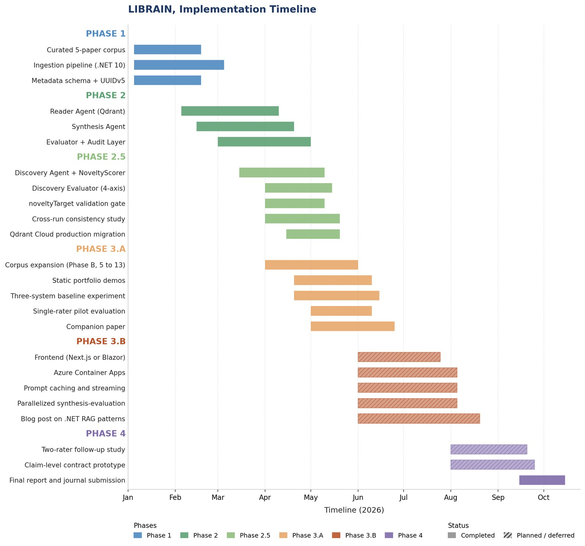
9. Practical Deployment
The preceding sections establish that LIBRAIN produces traceable, fenced, claim-validated hypotheses and how well its automated evaluation aligns with human judgment. This section turns to the operational question a prospective adopter actually asks: who would run this system, what does it cost them, and where does it stop being useful. We first give three concrete deployment personas with quantified workflows (Section 9.1), then summarize the operational envelope, latency, cost, infrastructure, compliance (Section 9.2), and finally we are explicit about the boundaries of the current design (Section 9.3).
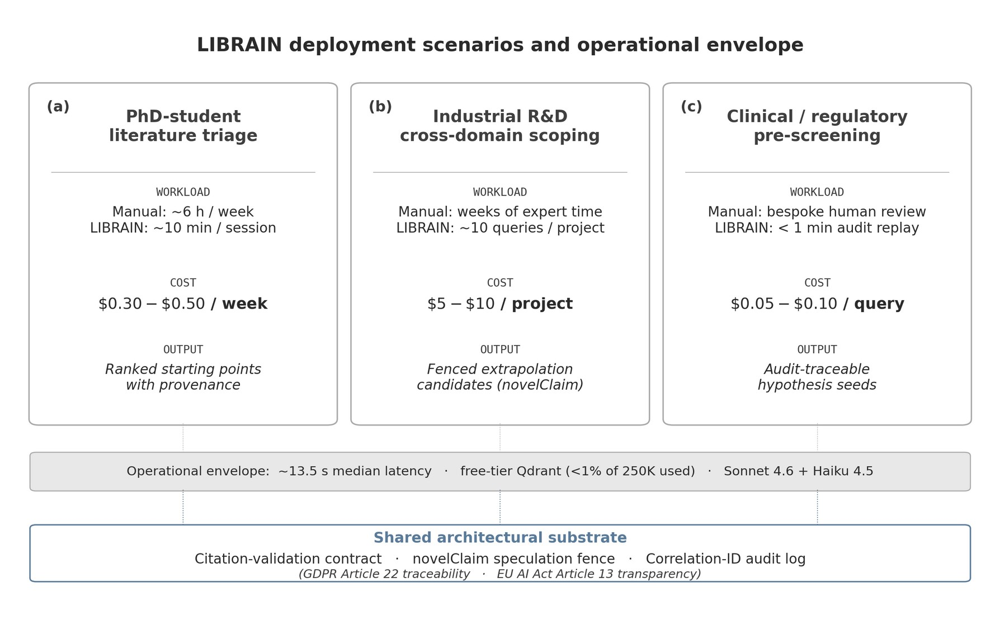
9.1 Deployment Scenarios
(a) PhD-student literature triage. The canonical early-stage use is triage: a doctoral researcher scanning a fast-moving subfield to decide which directions are worth a deeper read. Done by hand, this is on the order of six hours per week of skimming abstracts, chasing citations, and forming tentative connections, work that is mostly discarded. With LIBRAIN’s Discovery Mode, the same researcher poses a handful of cross-topic queries against an already-ingested corpus and reads the fenced hypotheses plus their supportingEvidence chunks. At roughly 13.5 s median end-to-end per query (Section 7.3), a triage session of a dozen queries finishes in about ten minutes. The novelClaim field tells the reader immediately which part of each hypothesis is speculative, and the per-stage audit trace lets them jump straight to the grounding chunk rather than re-reading the source paper. At the measured Discovery cost (Section 9.2), a week of triage at this volume costs roughly 0.70 to 0.90 USD. The output is not a finished literature review; it is a ranked set of defensible starting points, each with its provenance attached.
(b) Cross-domain research scoping (industrial R&D). Industrial R&D teams periodically run cross-pollination exercises, asking whether a technique from one field could unlock a problem in another. Today this is expert-driven and slow: it takes a senior researcher who happens to know both domains, and the scoping phase alone can run for weeks. LIBRAIN’s Discovery Mode is purpose-built for exactly this shape of query: the input is a pair of topics, and the output is an explicitly fenced extrapolation across them. The worked example in Section 3.8 (pair-02, RAG by de novo molecular design) is representative. The system retrieves six directly supporting chunks spanning three papers and proposes adapting the RAG retriever to a structured chemical knowledge base, with the speculative core (a self-evolving retriever over a docking experience database) fenced into a single novelClaim that the Claim Validator independently rates as GROUNDED with factual-hallucination probability 0.08. A domain expert reading this gets a concrete, scoped, and traceable cross-pollination candidate, not a vague "these fields might connect." Running on the order of ten such paired queries to scope a project costs about 0.66 USD in API spend (0.066 USD per Discovery run on average, Section 9.2), against the weeks of expert time the manual equivalent consumes.
(c) Reproducibility-required pre-screening (clinical / regulatory). In regulated settings (clinical research, pharmacovigilance, regulatory pre-screening) an AI-assisted hypothesis is only usable if its derivation can be reconstructed after the fact. LIBRAIN’s audit design targets this directly: every pipeline stage writes structured log events keyed by a correlation ID, which can be exported to Application Insights, and every cited chunk passes the citation-validation contract before it can appear in an output. The result is a hypothesis seed whose full provenance, which retrieval produced which chunk, which claim the validator graded and at what risk, can be replayed from the audit log. This maps onto the data-integrity expectations of ICH E6(R3) (the revised Good Clinical Practice guideline), under which automated tooling must produce records that are attributable and reconstructable. LIBRAIN does not make a regulatory claim; it produces audit-traceable hypothesis seeds suitable for a documented human pre-screening step, with the correlation-ID provenance that such a step requires.
9.2 Operational Considerations
Latency. Median end-to-end latency is approximately 13.5 s (Section 7.3). For research-loop and batch-triage use this is comfortably acceptable, it is fast relative to the manual alternative and is dominated by sequential LLM calls. It is, however, too slow for a fluid interactive UI; closing that gap was the motivation for Phase 3.B response streaming. The endpoints now stream progress events while a run works and then deliver the complete result (Section 8.5); streaming the hypothesis text itself, so that a user could start reading it before the evaluation and claim-validation stages complete, is still open.
Cost. A single-pipeline query (Phase 2) costs about 0.030 USD. A full multi-agent Discovery run with parallel evaluation, novelty scoring, and claim validation costs 0.057 to 0.075 USD, with a mean of 0.066 USD over the 46 runs of Experiment 8, computed from logged token counts; the Sonnet 4.6 generation call accounts for about 70 percent of that. Prompt caching does little to lower these figures (Section 7.3). At a sustained 50 Discovery runs per day, total spend is on the order of 85 to 115 USD per month.
Infrastructure. For the Phase 2.5 deployment the vector store ran on free-tier Qdrant Cloud, which holds up to 250K vectors; the current setup runs Qdrant locally through Docker Compose, and no hosted deployment is live. The pre-registered experiments use a 13-paper corpus of roughly 610 chunks, while the live corpus holds 55 papers and 2,210 chunks; both would sit under 1 percent of the free tier. Scaling the corpus to about 5,000 papers stays comfortably within the same free tier, so storage is not a near-term cost or operational constraint; the binding cost is per-query LLM spend, which scales with usage rather than corpus size.
Compliance. The per-stage audit trace (structured logs keyed by correlation ID, exported to Application Insights when a connection string is configured) is not only an engineering convenience, it is the substrate for two regulatory regimes. Under GDPR Article 22, where an automated process meaningfully informs a decision, the data subject is entitled to traceability of that process; the correlation-ID trace provides exactly the per-stage record needed to satisfy that. Under the forthcoming EU AI Act Article 13 transparency obligations, providers of higher-risk AI systems must enable downstream interpretation of outputs; LIBRAIN’s combination of audit log, citation contract, and novelClaim fence is designed to make each output interpretable at the stage level rather than as an opaque whole.
9.3 Limitations of Practical Deployment
Pre-ingested corpus only. LIBRAIN reasons over a corpus that has already been chunked, embedded, and indexed into Qdrant. It is not an ad-hoc web-search agent: a topic with no relevant ingested papers yields no useful retrieval. The adopter owns corpus curation, and the quality of every downstream stage is bounded by what was ingested.
Citation contract assumes structured retrieval. The citation-validation contract operates over chunk identifiers produced by the structured retrieval pipeline. Integrating it with sparse, hybrid, or BM25-style retrieval (where the unit of evidence is not the same dense-chunk identifier) is open work. The by-construction guarantee that no cited chunk is fabricated holds because retrieval is structured; that guarantee would need to be re-established for a different retrieval substrate.
novelClaim factuality is gated, not eliminated. The Claim Validator grades each fenced claim and attaches a factual-hallucination probability (0.08 for the pair-02 example), and the three-rater evaluation held LIBRAIN to 0 hallucination flags across n equals 30 (Section 7.9). But gating is not a guarantee of truth: a low risk score reduces, rather than removes, the chance of a factually-wrong speculative claim. The system produces audit-traceable hypothesis seeds, and a domain expert remains required downstream to accept, reject, or test them.
10. Conclusion
LIBRAIN is a multi-agent retrieval-augmented architecture, implemented end to end on .NET 10, that integrates four mechanisms not jointly present in any prior scientific-RAG system: an explicit citation-validation contract over every cited chunk, speculation fencing that isolates extrapolative content in a dedicated novelClaim field, per-sentence claim-level validation of that speculative content, and correlation-ID audit logging that makes every output traceable from prompt to token-level cost. We evaluated the system on ten cross-domain topic pairs against two ablation baselines (a single LLM with topic-only prompting and a Naive-RAG pipeline) scored on a four-axis rubric. The central finding, that the claim-level validation contract closes the hallucination signal inside speculative content, was replicated under a three-rater blinded protocol (n = 30 pooled across two independent three-rater panels), and a robustness sweep adds the headline empirical result: under adversarial citation-coercion the structural contract admits zero fabricated citations under both Sonnet 4.6 and Haiku 4.5.
The results yield five claims, each tied to a measured quantity.
(1) Retrieval, not agent decomposition, drives the largest plausibility gain. Naive-RAG exceeds the single-LLM baseline on plausibility by +0.265 absolute (0.6220 against 0.3570). The grounding act itself supplies most of the plausibility benefit; agent decomposition adds traceability and control, not raw plausibility.
(2) Speculation fencing produces a deliberate profile shift, not a deficit. LIBRAIN gains +31 percent relative novelty over Naive-RAG (0.4033 against 0.3068) at a -19 percent plausibility cost (0.5050 against 0.6220). Fencing trades a measured amount of plausibility for substantially more novelty, by design.
(3) The citation-validation contract is a structural guarantee, demonstrated to hold under adversarial conditions. On Sonnet 4.6 over a curated corpus, no cited chunk can be fabricated by construction. The Section 7.10 adversarial sweep extends this from theoretical to empirical: under a prompt explicitly demanding out-of-set citations, the contract admitted zero fabrications under both Sonnet 4.6 and Haiku 4.5.
(4) The Phase 3.A.5 claim-level validation contract closed the hallucination signal. The single-rater pilot moved from 3/5 flagged outputs before the fix to 0/5 after it, and this closure held to 0 LIBRAIN flags across both three-rater panels (n = 30 pooled).
(5) The novelty rubric orders outputs consistently at the ordinal scale. Pairwise inter-rater Spearman rho on the novelty axis reaches 0.937 for the R2-R3 pair, while the two R1 pairs sit at 0.805 and 0.820 (panel 1: R1-R2 = 0.805, R1-R3 = 0.820, R2-R3 = 0.937; panel 2: R1-R2 = 1.000, R1-R3 = 0.943, R2-R3 = 0.943), with pooled Krippendorff ordinal alpha of 0.78, the strongest agreement between the two raters who scored the full hypothesis.
A later hardening pass made the pipeline fail with an error where it used to record a plausible-looking number, and replaying the 30 committed Discovery outputs of Section 7.6.6 reproduces their scores under the current code. Experiment 8 then ran Discovery Mode in nine fields, most of them beyond the original corpus: all 46 runs completed, all 246 claimed citations resolved, and 14 hypotheses were featured after reading, each still an untested candidate.
Deployment is realistic with today’s stack. End-to-end latency is approximately 13.5 s median, and per-query cost ranges from approximately 0.030 USD in the single-pipeline Phase 2 configuration to 0.057 to 0.075 USD (mean 0.066 USD, measured over the 46 runs of Experiment 8) for a multi-agent Discovery run. The 13-paper corpus occupies roughly 610 vectors, under 1 percent of the Qdrant free-tier ceiling of 250K, so storage is nowhere near binding. The three deployment scenarios in Section 9.1, PhD-student literature triage, cross-domain research scoping, and reproducibility-required pre-screening, are immediately viable at this cost and latency profile, not aspirational. The correlation-ID audit trace gives LIBRAIN the kind of decision provenance that the right-to-explanation under GDPR Article 22 and the transparency obligations of the forthcoming EU AI Act Article 13 will expect of automated reasoning systems.
The evaluation has clear limits. The human study now spans n = 30 across two independent three-rater panels; the next step is expansion to 50 or more outputs to tighten the confidence intervals around the per-system means. Cohen’s kappa on the hallucination axis is not applicable for the LIBRAIN and Single-LLM outputs, whose flags are uniformly zero across all thirty outputs; the unconstrained Naive-RAG baseline supplies the only non-zero entries on the axis (Section 7.9.6), so the axis as a whole is no longer zero-variance, though the panel-2 raters agreed exactly on the single flagged output. Turning kappa into a fully informative statistic still requires deliberately fabrication-prone outputs that introduce rater disagreement. The corpus of the pre-registered experiments is curated at 13 papers (the live corpus now holds 55), and scaling to about 5,000 papers is an engineering exercise in ingestion and index management, not an architectural change, the retrieval, validation, and audit contracts are corpus-size invariant. The R3 corpus-sensitivity sweep can now run without code changes, since the collection name is configurable, but it has not been run. Section 7.3 lists four further limitations that Experiment 8 makes concrete.
Future work follows three lines. We will add hybrid sparse-dense retrieval with re-ranking, the main retrieval change still outstanding, to recover lexical matches that pure embedding search misses on rare scientific terminology. We will route novelClaim content through domain-expert-in-the-loop validation so that speculative claims are checked against working knowledge, not only against the corpus. Finally, we will drive p95 latency below five seconds by parallelizing the synthesis-and-evaluation dispatch described in Section 8.4.B, exploiting the fact that the evaluator, novelty scorer, and claim validator are already independent.
Appendix A. Five Discovery Mode demonstrations
This appendix shows five Discovery Mode outputs in full, drawn from the static demonstration set on the project portfolio (erenmutlu.me/projects/librain). Each demonstration includes the generated hypothesis, the speculative novelClaim substring, the supporting evidence (resolved to specific arXiv papers and chunk indices), and the four-axis Discovery Evaluator scores under the Phase B AFTER-FIX protocol. The hypotheses and novelClaim text shown were captured during the static portfolio demonstration; the four-axis scores correspond to the Phase B AFTER-FIX values for the same pre-registered topic pair (Cards 3-5, Table 5 of Section 6.5) or to the Phase 2.5 smoke-pair aggregates reported in Section 7.4 (Cards 1-2). Cards 1 and 2 illustrate the in-corpus and off-corpus Phase 2.5 smoke runs; Cards 3-5 map to pair-02, pair-06, and pair-10 of the Phase B pre-registered set and correspond to the cherry-picked runs already described numerically in Section 6.5.
Demonstration 1 (in-corpus, Phase 2.5 smoke pair). retrieval-augmented generation × hypothesis generation in scientific discovery.
Hypothesis. RAG systems, by combining updatable non-parametric memory with generative models, provide a natural substrate for automated scientific hypothesis generation. Specifically, the RAG-Token mechanism’s ability to draw on different retrieved documents for each output token could enable the synthesis of cross-disciplinary evidence into novel, testable hypotheses that span previously siloed fields. Furthermore, integrating hypothesis quality filters (novelty and feasibility scoring) directly into the RAG retrieval objective, so that the retriever is rewarded for surfacing documents that maximize hypothesis novelty while maintaining feasibility, could yield a self-improving discovery loop that surpasses both purely parametric LLMs and static literature-based discovery systems.
novelClaim. Integrating hypothesis quality filters (novelty and feasibility scoring) directly into the RAG retrieval objective, so that the retriever is rewarded for surfacing documents that maximize hypothesis novelty while maintaining feasibility, could yield a self-improving discovery loop that surpasses both purely parametric LLMs and static literature-based discovery systems.
Supporting evidence. arXiv:2005.11401 (Lewis et al., RAG), chunks 2 and 10, direct. arXiv:2505.04651, chunks 0, 14, and 23, direct.
Scores. novelty 0.40, plausibility 0.42, coherence 0.68, quality 0.50 (in-corpus Phase 2.5 smoke run aggregate from Section 7.4).
Demonstration 2 (off-corpus, Phase 2.5 smoke pair). retrieval-augmented generation × protein folding dynamics.
Hypothesis. RAG architectures, which combine parametric and non-parametric memory through differentiable retrieval and end-to-end marginalization over latent documents, could be directly applied to protein folding dynamics by indexing structural and biophysical databases as the non-parametric memory, enabling agentic systems to dynamically retrieve and integrate folding pathway evidence at inference time, not encoding it statically in model weights. Such a RAG-augmented protein folding agent would be capable of discovering length-dependent or context-dependent folding phenomena (analogous to the mechanical crossover in peptide unfolding force uncovered by Sparks) that purely parametric structure-prediction models systematically miss because they cannot update their knowledge base without retraining.
novelClaim. Such a RAG-augmented protein folding agent would be capable of discovering length-dependent or context-dependent folding phenomena (analogous to the mechanical crossover in peptide unfolding force uncovered by Sparks) that purely parametric structure-prediction models systematically miss because they cannot update their knowledge base without retraining.
Supporting evidence. arXiv:2005.11401 (Lewis et al., RAG), chunks 0, 2, and 10, direct. arXiv:2508.14111 (Agentic AI for Scientific Discovery), chunk 33 (Protein Science section) direct, chunk 32 (Genomics section) analogous.
Scores. novelty 0.48, plausibility 0.42, coherence 0.68, quality 0.53 (off-corpus Phase 2.5 smoke run aggregate from Section 7.4).
Demonstration 3 (cross-domain, pair-02). retrieval-augmented generation × de novo molecular design.
Hypothesis. RAG architectures, which dynamically retrieve and marginalize over external non-parametric knowledge to reduce hallucination in language generation, could be directly adapted for de novo molecular design by replacing the text document index with a structured chemical knowledge base, enabling a generative chemistry agent to retrieve relevant molecular scaffolds, reaction precedents, and binding interaction reports at each design step, thereby grounding novel molecule proposals in experimentally validated chemical knowledge. This RAG-augmented molecular design loop would allow the retrieval index to be hot-swapped as new experimental results accumulate, enabling continuous self-improvement of the design agent without retraining the generative model. Crucially, such a system would self-evolve over successive design cycles by accumulating an experience database of past docking results and interaction reports, allowing the retriever to progressively sharpen its relevance signal toward high-affinity, drug-like chemical space.
novelClaim. Crucially, such a system would self-evolve over successive design cycles by accumulating an experience database of past docking results and interaction reports, allowing the retriever to progressively sharpen its relevance signal toward high-affinity, drug-like chemical space.
Supporting evidence. arXiv:2005.11401 (Lewis et al., RAG), chunks 0, 2, and 10, direct. arXiv:2503.22164 (Gao et al., PharmAgents), chunks 6 and 7, direct. arXiv:2508.14111 (Agentic AI for Scientific Discovery), chunk 38, direct.
Scores. novelty 0.3773, plausibility 0.6200, coherence 0.7500, quality 0.5824 (Phase B AFTER-FIX, pair-02 row of Table 5).
Demonstration 4 (cross-domain, pair-06). weather foundation models × renewable energy planning.
Hypothesis. Weather foundation models like Aurora and GraphCast, which already demonstrate fine-tunable skill across diverse Earth system variables (wind, waves, air quality) at orders-of-magnitude lower computational cost than NWP, could be directly integrated into renewable energy planning pipelines as probabilistic scenario engines that generate spatially and temporally coherent multi-week wind and solar resource trajectories, simultaneously accounting for correlated atmospheric variables (e.g., wind speed, temperature, cloud cover) across entire grid regions. Fine-tuning such models on domain-specific renewable energy variables, such as hub-height wind profiles or photovoltaic irradiance, could unlock a new class of AI-native energy planning tools that co-optimize forecast accuracy and infrastructure investment decisions in a single differentiable framework.
novelClaim. Fine-tuning such models on domain-specific renewable energy variables, such as hub-height wind profiles or photovoltaic irradiance, could unlock a new class of AI-native energy planning tools that co-optimize forecast accuracy and infrastructure investment decisions in a single differentiable framework.
Supporting evidence. arXiv:2405.13063 (Bodnar et al., Aurora), chunks 0 and 5, direct. arXiv:2212.12794 (Lam et al., GraphCast), chunks 16 and 19, direct. arXiv:2211.02556 (Bi et al., Pangu-Weather), chunk 4, direct.
Scores. novelty 0.4535, plausibility 0.6200, coherence 0.7500, quality 0.6078 (Phase B AFTER-FIX, pair-06 row of Table 5).
Demonstration 5 (cross-domain, pair-10). drug discovery × climate adaptation.
Hypothesis. Autonomous multi-agent AI systems, already demonstrated to accelerate the full drug discovery pipeline from target identification to preclinical evaluation, rely on a self-evolving, experience-accumulating architecture that continuously updates its priorities as new evidence arrives. A climate-adaptation counterpart could iteratively refine regional adaptation strategies, such as infrastructure hardening or crop-switching recommendations, by incorporating real-time extreme-heat and atmospheric-river forecasts from models like GraphCast as dynamic environmental inputs. This cross-domain transfer would enable the first fully autonomous, interpretable pipeline that closes the loop from probabilistic climate hazard forecasting to actionable, location-specific adaptation policy generation.
novelClaim. A climate-adaptation counterpart could iteratively refine regional adaptation strategies, such as infrastructure hardening or crop-switching recommendations, by incorporating real-time extreme-heat and atmospheric-river forecasts from models like GraphCast as dynamic environmental inputs. This cross-domain transfer would enable the first fully autonomous, interpretable pipeline that closes the loop from probabilistic climate hazard forecasting to actionable, location-specific adaptation policy generation.
Supporting evidence. arXiv:2503.22164 (Gao et al., PharmAgents), chunks 1 and 2, direct. arXiv:2508.14111 (Agentic AI for Scientific Discovery), chunk 33 (Protein Science section), direct. arXiv:2212.12794 (Lam et al., GraphCast), chunks 8 and 65 (Atmospheric Rivers section), direct. arXiv:2405.13063 (Bodnar et al., Aurora), chunk 16 (Training methods section), analogous.
Scores. novelty 0.4067, plausibility 0.6200, coherence 0.6800, quality 0.5689 (Phase B AFTER-FIX, pair-10 row of Table 5).
Claim validation. The ClaimValidator labels the first novelClaim sentence EXTRAPOLATED (risk probability 0.15) and the second RISKY (risk probability 0.75), for an aggregate claim risk of 0.75.
A.1 Reading guide
Each demonstration above shows the four core artefacts that the citation-validation contract and the speculation-fencing design produce together: the full hypothesis text from a single Discovery Mode invocation, the substring of that text that the model itself flagged as novelClaim (and that the citation-validation contract exempts from supporting-evidence resolution), the supporting evidence list with each chunk index validated against the retrieved set, and the four-axis Discovery Evaluator scores. Demonstration 5 is the same drug-by-climate output that rater 1 flagged for factual hallucination in Section 7.7.3 and that the AFTER-FIX claim-level validation contract subsequently re-scored at hallucination equals 0 under three independent raters in Section 7.9. Demonstration 5 also displays a fifth artefact, the per-sentence claim-validation output.
11. References
[1] M. Gridach, J. Nanavati, K. Z. El Abidine, L. Mendes, and C. Mack, "Agentic AI for Scientific Discovery: A Survey of Progress, Challenges, and Future Directions," arXiv preprint arXiv:2503.08979, Mar. 2025.
[2] A. K. Alkan et al., "A Survey on Hypothesis Generation for Scientific Discovery in the Era of Large Language Models," arXiv preprint arXiv:2504.05496, Apr. 2025.
[3] S. Kulkarni and A. Alotaibi, "Scientific Hypothesis Generation and Validation: Methods, Datasets, and Future Directions," arXiv preprint arXiv:2505.04651, May 2025.
[4] Z. Chen et al., "From AI for Science to Agentic Science: A Survey on Autonomous Scientific Discovery," arXiv preprint arXiv:2508.14111, Aug. 2025.
[5] D. A. Boiko, R. MacKnight, B. Kline, and G. Gomes, "Autonomous chemical research with large language models," Nature, vol. 624, pp. 570 to 578, 2023, doi: 10.1038/s41586-023-06792-0.
[6] J. S. Park, J. C. O’Brien, C. J. Cai, M. R. Morris, P. Liang, and M. S. Bernstein, "Generative Agents: Interactive Simulacra of Human Behavior," in Proc. of the 36th Annual ACM Symposium on User Interface Software and Technology (UIST 2023), 2023.
[7] P. Lewis et al., "Retrieval-Augmented Generation for Knowledge-Intensive NLP Tasks," in Advances in Neural Information Processing Systems (NeurIPS), vol. 33, pp. 9459 to 9474, 2020.
[8] OpenAI, "GPT-4 Technical Report," arXiv preprint arXiv:2303.08774, 2023.
[9] Anthropic, "Claude 4 model family, system documentation," Anthropic technical documentation, 2025 to 2026.
[10] S. Es, J. James, L. Espinosa-Anke, and S. Schockaert, "RAGAS: Automated Evaluation of Retrieval Augmented Generation," arXiv preprint arXiv:2309.15217, 2023. Multi-dimensional judging precedent.
[11] TruEra and TruLens, "TruLens: Evaluation and tracking for LLM applications," open-source documentation, 2023 to 2025.
[12] Microsoft, ".NET 10 release notes and runtime documentation," Microsoft Learn, 2025 to 2026.
[13] Qdrant Solutions GmbH, "Qdrant, Open-source vector database, version 1.17," qdrant.tech documentation, 2026.
[14] UglyToad, "PdfPig, read and extract text from PDFs in pure C#," GitHub project documentation, 2025.
[15] Microsoft, "Azure Cosmos DB Vector Search for NoSQL API," Azure documentation, 2025 to 2026.
[16] A. M. Bran, S. Cox, O. Schilter, C. Baldassari, A. D. White, and P. Schwaller, "Augmenting large language models with chemistry tools," Nature Machine Intelligence, vol. 6, pp. 525 to 535, 2024, doi: 10.1038/s42256-024-00832-8.
[17] B. Gao, Y. Huang, et al., "PharmAgents: Building a Virtual Pharma with Large Language Model Agents," arXiv preprint arXiv:2503.22164, 2025.
[18] X. Liu, Y. Zhang, Q. Shang, et al., "Foundation Model in Biomedicine," arXiv preprint arXiv:2503.02104, 2025.
[19] R. Lam, A. Sanchez-Gonzalez, M. Willson, P. Wirnsberger, et al., "Learning skillful medium-range global weather forecasting," Science, vol. 382, no. 6677, pp. 1416 to 1421, 2023, doi: 10.1126/science.adi2336. arXiv:2212.12794 (GraphCast).
[20] K. Bi, L. Xie, H. Zhang, X. Chen, X. Gu, and Q. Tian, "Accurate medium-range global weather forecasting with 3D neural networks," Nature, vol. 619, no. 7970, pp. 533 to 538, 2023, doi: 10.1038/s41586-023-06185-3. arXiv:2211.02556 (Pangu-Weather).
[21] C. Bodnar, W. P. Bruinsma, A. Lucic, M. Stanley, A. Allen, et al., "A foundation model for the Earth system," Nature, vol. 641, pp. 1180 to 1187, 2025, doi: 10.1038/s41586-025-09005-y. arXiv:2405.13063 (Aurora).
[22] M. Binz, E. Akata, M. Bethge, F. Brändle, F. Callaway, et al., "A foundation model to predict and capture human cognition," Nature, vol. 644, pp. 41 to 50, 2025, doi: 10.1038/s41586-025-09215-4. arXiv:2410.20268 (Centaur).
[23] N. Babu and J. Mathew, "Large Language Models for EEG: A Comprehensive Survey and Taxonomy," arXiv preprint arXiv:2506.06353, 2025.
[24] B. H. Sigelman et al., "Dapper, a Large-Scale Distributed Systems Tracing Infrastructure," Google Technical Report dapper-2010-1, 2010. Foundational distributed tracing paper for the correlation-ID pattern.
[25] B. Beyer, C. Jones, J. Petoff, and N. R. Murphy (Eds.), Site Reliability Engineering: How Google Runs Production Systems. O’Reilly Media, 2016. Observability as a design constraint.
[26] J. Lala, O. O’Donoghue, A. Shtedritski, S. Cox, S. G. Rodriques, and A. D. White, "PaperQA: Retrieval-Augmented Generative Agent for Scientific Research," arXiv preprint arXiv:2312.07559, 2023.
[27] Tay et al., "SciRAG: Adaptive, Citation-Aware, and Outline-Guided Retrieval and Synthesis for Scientific Literature," arXiv preprint arXiv:2511.14362, 2025.